1. INTRODUCCIÓN
- Objetivo de la ficha departamental
La ficha departamental tiene como objetivo presentar de manera clara y resumida las características territoriales y ambientales de cada departamento, con el fin de apoyar la Gestión del Riesgo de Desastres (GRD). Este documento recopila información clave sobre aspectos geográficos, humanos, arqueológicos y ambientales que influyen en el ordenamiento del territorio, y ayuda a identificar posibles escenarios de riesgo. Además, incorpora los lineamientos normativos nacionales y hace referencia a los antecedentes históricos de eventos que han generado amenazas y sus impactos. Todo ello con el objetivo de facilitar la comprensión de las dinámicas territoriales y brindar herramientas útiles para que los tomadores de decisiones actúen de manera informada, promoviendo la sostenibilidad ambiental y una adecuada gestión del riesgo.
- Alcance y metodología de recopilación de información.
La elaboración de la ficha departamental se basó en la revisión de documentos provenientes de fuentes primarias y secundarias. Esta información fue recopilada a partir de los portales web de entidades nacionales y departamentales, e incluye datos suministrados por instituciones que hacen parte del Sistema Nacional de Gestión del Riesgo de Desastres (SNGRD).
- Población objetivo.
Este documento está dirigido a profesionales y técnicos involucrados en la gestión del riesgo de desastres en el territorio colombiano. Está pensado para funcionarios de entidades gubernamentales, investigadores, consultores, tomadores de decisiones, personas interesadas en la temática y demás actores que hacen parte del Sistema Nacional de Gestión del Riesgo de Desastres (SNGRD).
- Marco normativo y referencias institucionales.
La ficha departamental incorpora los principales lineamientos normativos nacionales y estrategias de conservación ambiental que son clave para la planificación y gestión del territorio. Entre ellos, se destaca la Ley 1523 de 2012, que establece el Sistema Nacional de Gestión del Riesgo de Desastres (SNGRD) y orienta las acciones de prevención, reducción del riesgo y atención de emergencias. En cuanto a las determinantes ambientales, se tuvo en cuenta la Ley 99 de 1993, que define los principios de protección ambiental y sostenibilidad, asignando responsabilidades a las entidades territoriales y ambientales.
Por otra parte, el ordenamiento territorial se rige por la Ley 388 de 1997, que introduce los Planes de Ordenamiento Territorial (POT) como herramientas fundamentales para planificar el desarrollo urbano y rural. Además, se consideró el marco legal para la conservación del patrimonio arqueológico y cultural, contemplado en la Ley 1185 de 2008 y el Decreto 763 de 2009, que regulan la protección de sitios arqueológicos y bienes de interés cultural.
Para la elaboración de esta investigación, se consultaron diversas fuentes institucionales reconocidas a nivel nacional. Entre ellas se encuentran el Instituto de Investigación de Recursos Biológicos Alexander Von Humboldt, el Instituto Colombiano de Antropología e Historia (ICANH), el Instituto de Hidrología, Meteorología y Estudios Ambientales (IDEAM) y el Departamento Administrativo Nacional de Estadística (DANE). También se utilizaron datos del Instituto Geográfico Agustín Codazzi (IGAC), el Servicio Geológico Colombiano (SGC), el Instituto de Investigaciones Marinas y Costeras (INVEMAR), y diversas Corporaciones Autónomas Regionales (CAR).
# 2. CARACTERIZACIÓN TERRITORIAL Y AMBIENTAL
2.1. Ubicación y límites.
El departamento de Córdoba está ubicado en la región Caribe de Colombia, es decir Córdoba se ubica al noroccidente del territorio colombiano. Sus límites geográficos son para la zona Este con los departamentos de Sucre y Bolívar, al Sur y Suroeste con Antioquia, y al Oeste con el mar Caribe (ver Figura 1).
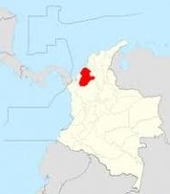
FIGURA. 1 Mapa Político Administrativo del Departamento de Córdoba. Fuente: IGAC (2002).
link: https://www.todacolombia.com/departamentos-de-colombia/cordoba/municipios-division-politica.html
El relieve del departamento de Córdoba se compone de tres zonas principales: las planicies fluviales de los ríos Sinú y San Jorge, que atraviesan municipios como Montería, Lorica y Ayapel. La zona montañosa, que hace parte de la Cordillera Occidental, donde se destacan las serranías de Abibe, Ayapel y San Jerónimo, visibles en municipios como Tierralta y Valencia; y las zonas costero-marinas, localizadas en el norte del departamento, en municipios como San Antero, Moñitos y Los Córdobas. Estas tres unidades definen la geografía y usos del suelo en la región.
2.2. Extensión de superficie (Km2).
El departamento de Córdoba cuenta con una superficie aproximada de 25.020 kilómetros cuadrados, lo que lo convierte en una de las entidades territoriales de tamaño intermedio en el país.
2.3. División político-administrativa.
El departamento de Córdoba presenta una distribución para 30 municipios, la siguiente tabla mencionada el total de los municipios (Ver Tabla 1):
Tabla 1 Municipios del departamento de Córdoba. Fuente: Autor (2025).
| N° Muni | cipio N° Mun | icipio | N° Municipio | N° Mun | icipio | N° M | unicipio N° Municipio | ||||
| 1 | Montería | 6 | Ayapel | 11 | Buenavista | 16 | Canalete | 21 | Cereté | 26 | Chimá |
| 2 | Chinú | 7 | Ciénaga de Oro | 12 | Cotorra | 17 | La Apartada | 22 | Lorica | 27 | Los Córdobas |
| 3 | Momil | 8 | Montelíbano | 13 | Moñitos | 18 | Planeta Rica | 23 | Pueblo Nuevo | 28 | Puerto Escondido |
| 4 | Puerto Libertador | 9 | Purísima | 14 | Sahagún | 19 | San Andrés de Sotavento | 24 | San Antero | 29 | San Bernardo del Viento |
| 5 | San Carlos | 10 | San José de Uré | 15 | San Pelayo | 20 | Tierralta | 25 | Tuchín | 30 | Valencia |
2.4. Población y demografía
La información presentada a continuación fue recopilada a través del Sistema de Estadística Territorial (TERRIDATA), una plataforma del Departamento Nacional de Planeación (DNP) que centraliza datos relevantes para el análisis y la planificación del desarrollo territorial en Colombia.
- 4.1. Habitantes totales.
Según estimaciones del Departamento Administrativo Nacional de Estadística (DANE) para el año 2024, el departamento de Córdoba cuenta con una población aproximada de 1.914.778 habitantes.
La población del departamento de Córdoba se caracteriza por ser mayoritariamente joven, con una base amplia en los grupos de edad entre 0 y 19 años, lo que refleja un alto índice de natalidad. A medida que aumentan las edades, se observa una disminución progresiva en el número de habitantes, lo que indica un proceso de envejecimiento gradual de la población.
2.4.2. Crecimiento poblacional y proyecciones.
La proyección para el año 2035 es de 2.038.014 habitantes, mostrando un crecimiento moderado de la población, acompañado de una transición hacia el envejecimiento. Si bien la franja de edad productiva (20 – 39 años) se amplía, la reducción en la base de la pirámide sugiere una disminución en la tasa de natalidad.
En cuanto a la distribución por género, se evidencia que las mujeres tienden a vivir más que los hombres, siendo más numerosas en los grupos de edad de 70 años en adelante, lo que corresponde con una mayor esperanza de vida femenina. En lo que respecta a la ubicación de la población, se identifica que tiene porcentajes similares en lo que respecta a la zona rural (48,9%) de la urbana (51,1%).
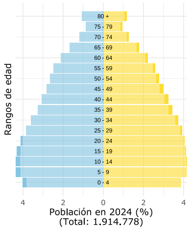 |
 |
 |
 |
FIGURA. 2 Distribución demográfica del departamento de Córdoba. FUENTE: Tomado de la proyección DANE (2024), pg. 1 y 2.
LINK: https://terridata.blob.core.windows.net/fichas/Ficha_23000.pdf
2.5. Actividades económicas.
SECTORES PRODUCTIVOS PREDOMINANTES.

FIGURA. 3 Participación por actividad económica en el departamento de Córdoba. 2022. Fuente: UPRA-DANE, pg. 8.
De acuerdo con datos de la Unidad de Planificación Rural Agropecuaria (UPRA, 2022), las principales actividades económicas del departamento de Córdoba muestran una alta dependencia del sector público, siendo la administración pública y defensa la que mayor participación tiene en el valor agregado bruto, con un 26%.
En segundo lugar, se encuentra el sector de comercio al por mayor y al por menor, que representa un 16,5%, seguido por el sector de agricultura, ganadería, caza, silvicultura y pesca, con una participación del 14,1%, lo que resalta la relevancia del sector primario en la economía regional.
Las industrias manufactureras contribuyeron con un 12,1% al valor agregado bruto del departamento, consolidándose como un pilar del desarrollo industrial en la región. Otros sectores con participación relevante fueron las actividades profesionales, científicas y técnicas con un 6,8%, el suministro de energía eléctrica, gas y agua con un 5,1%, y tanto la explotación de minas y canteras como la construcción, cada una con un 4,6%.
En contraste, sectores como las actividades inmobiliarias, las comunicaciones, el entretenimiento y los servicios financieros registraron una participación inferior al 3,5% cada uno, aunque siguen representando un componente importante dentro de la estructura económica departamental.
2.6. Instrumentos territoriales de ordenamiento, planificación ambiental y gestión del riesgo.
- Plan de desarrollo departamental.
Plan de Desarrollo Departamental “Córdoba lo tiene todo para estar a otro nivel 2024-2027”
- Planes municipales de ordenamiento territorial.
Tabla 2 Instrumentos de ordenamiento territorial municipal.
| Municipio Inst | rumento (POT/PBOT/EOT) Año de v | igencia Estado (vige | nte/desactualizado) |
|---|---|---|---|
| Montería | POT | 2021 | Actualizado |
| Ayapel | PBOT | 2015 (ajuste) / 2014-2029 (PBOT publicado) | Actualizado |
| Buenavista | EOT | 2016 - 2027 | Actualizado |
| Canalete | EOT | 2001 - 2010 | Desactualizado |
| Cereté | PBOT | 2012 - 2023 | Actualizado |
| Chimá | EOT | 2003 - 2012 | Desactualizado |
| Chinú | PBOT | 2000 - 2010 | Desactualizado |
| Ciénaga de Oro | PBOT | 2019 | Desactualizado |
| Cotorra | EOT | 2004 - 2012 | Desactualizado |
| La Apartada | EOT | 2017 | Desactualizado |
| Lorica | POT | 2012 - 2015 | Desactualizado |
| Los Córdobas | EOT | 2014 - 2027 | Actualizado |
| Momil | EOT | 2001 | Desactualizado |
| Montelíbano | PBOT | 2019 | Actualizado |
| Moñitos | PBOT | 2019 - 2031 | Actualizado |
| Planeta Rica | PBOT | 2017 | Desactualizado |
| Pueblo Nuevo | PBOT | 2017 - 2031 | Actualizado |
| Puerto Escondido | PBOT | 2016 - 2027 | Actualizado |
| Puerto Libertador | EOT | 2014 - 2019 | Desactualizado |
| Purísima | EOT | 2020 - 2023 | Desactualizado |
| Sahagún | POT | 2001 - 2014 | Desactualizado |
| San Andrés de Sotavento | PBOT | 2001 - 2010 | Desactualizado |
| San Antero | PBOT | 2007 | Desactualizado |
| San Bernardo del Viento | PBOT | 2002 | Desactualizado |
| San Carlos | EOT | 2005 - 2019 | Desactualizado |
| San José de Uré | EOT | 2016 - 2019 | Desactualizado |
| San Pelayo | PBOT | 2000 - 2009 | Desactualizado |
| Tierralta | PBOT | 2011 - 2023 | Desactualizado |
| Tuchín | PBOT | 2015 - 2027 | Actualizado |
| Valencia | PBOT | 2017 | Desactualizado |
- Planes Ambientales.
- Plan de Gestión Ambiental Regional, 2020-2031.
Elaborado por: Corporación Autónoma de los Valles del Sinú y San Jorge.
Link: https://cvs.gov.co/download/775/participa/16159/plan-de-gestion-ambiental-regional-2020-2031-2.pdf
- Planes de Ordenación y Manejo de Cuencas Hidrográficas (POMCA).
El recurso hídrico dentro de la jurisdicción de la Corporación, se encuentran definidas por el Instituto de Hidrología, Meteorología y Estudios Ambientales - IDEAM, siete (7) cuencas hidrográficas conformadas por: Rio Alto Sinú, Rio Medio-Bajo Sinú, Rio Alto San Jorge, Rio Bajo San Jorge, Rio Canalete- Rio Los Córdobas, Rio Mangle y otros arroyos directos del Caribe y Arroyos directos Golfo de Morrosquillo, éste último sólo una pequeña porción del área geográfica está dentro del departamento de Córdoba.
Tabla 3 Instrumentos POMCA en el departamento. Fuente: CVS (2024)
| Nombre POMCA Códi | go Hectárea | s Fase | LINK | |
| Rio Canalete, Los Cordobas y otros Arroyos - NSS | 1204-1 | 119.138 | Formulación | https://cvs.gov.co/convocatoria-observaciones-pomca-rio-canalete-rio-los-cordobas-y-otros-arroyos-1204-1/ |
| Rio Mangle y otros arroyos directos al Caribe - NSS | 1204-02 | 62.781 | No identificada | |
| Rio Alto Sinú | 1301 | 376.410 | Formulación | https://www.anla.gov.co/documentos/biblioteca/27-01-2021-anla-rash-rio-sinu-alto-san-jorge.pdf |
| Río Medio y Bajo Sinú - 2SZH | 1303 | 941.476 | Formulación | https://www.anla.gov.co/documentos/biblioteca/27-01-2021-anla-rash-rio-sinu-alto-san-jorge.pdf |
| Rio San Jorge | 2502-01 | 994.778 | Formulación | https://www.corpomojana.gov.co/download/pomca/pomca-documento-2502-01.pdf |
- POMIUAC/Planes de Ordenación y Manejo Integrado de la Unidad Ambiental Costera Unidad Ambiental Costera Estuarina del Río Sinú y el Golfo de Morrosquillo.
La costa cordobesa se extiende desde la punta de Arboletes en límites con Antioquia hasta Punta de Piedra en límites con Sucre, sobre el golfo de Morrosquillo, recorriendo los municipios de Los Córdobas, Puerto Escondido, San Bernardo del Viento, Moñitos y San Antero. En total son 124 km de costa y 6 km en promedio de anchura. Las zonas costeras, como componentes esenciales e integrales de la tierra, se constituyen en áreas críticas para el bienestar ambiental, económico y social de las naciones que las poseen (Kay y Alder, 2005; CicinSain et al., 2006).
Estos espacios con características únicas, dadas sus condiciones de intercambio de materia y energía entre la tierra, atmósfera y mar, que propician el desarrollo de ecosistemas y hábitats costeros (deltas, estuarios, lagunas, manglares, playas, pantanos de agua dulce, ríos y bosque costeros); que proporcionan valiosos productos y servicios para cubrir las necesidades económicas y de subsistencia para comunidades locales y externas (Gilman et al., 2008).
Tabla 4 Instrumento de Adaptación al Cambio Climático. Fuente: Autor (2025).
| INSTRUMENTO FECH | A DE ELABORACIÓN ÚLTIMA A | CTUALIZACIÓN LINK | |
| Plan Departamental de Adaptación al Cambio Climático para el Departamento de Córdoba 2016-2027. | 2016 | 2016 | https://aquadocs.org/bitstream/handle/1834/6633/Cartilla-UAC_Morrosquillo.pdf |
- Instrumentos de Gestión del Riesgo de desastres.
Tabla 5 Instrumentos departamentales de planificación en Gestión del Riesgo de Desastres.
| TIPO DE INSTRUMENTO FECH | A DE ELABORACIÓN ÚLTIMA A | CTUALIZACIÓN LINK | |
| Plan Departamental para la Gestión del Riesgo de Desastre. (PDGRD) | 2012 | 2022 | https://www.cordoba.gov.co/loader.php?lServicio=Tools2&lTipo=descargas&lFuncion=visorpdf&id=28471&pdf=1 |
| Estrategia Departamental de Respuesta (EDRE) | 2012 | 2024 | https://www.cordoba.gov.co/loader.php?lServicio=Tools2&lTipo=descargas&lFuncion=visorpdf&id=28470&pdf=1 |
## 2.7. Caracterización física del territorio.
2.7.0. Características Geológicas
Para el componente geológico del departamento fue necesario la revisión de información disponible en la entidad técnica competente, es decir, el Servicio Geológico Colombiano (SGC) El Servicio Geológico Colombiano (SGC) ha desarrollado un geoportal para brindar la información geo científica del país, por ejemplo, con la cartografía geológica de Colombia a escala 1:1’500.000 (Ver la Figura 4), y en una escala más detallada, por ejemplo, la plancha geológica 62 – La Ye, la cual abarca un área aproximada de 1.800 kilómetros cuadrados; esta zona se encuentra ubicada en la región de frontera entre los departamentos de Córdoba y Sucre.
A continuación, se anexa una visualización del geoportal o portal web elaborado por técnicos y expertos del Servicio Geológico Colombiano (SGC), para el uso y conocimiento libre de información geológica de todo el territorio colombiano, a escala 1:1’500.000. El link de acceso al portal web se anexa en las referencias del documento.
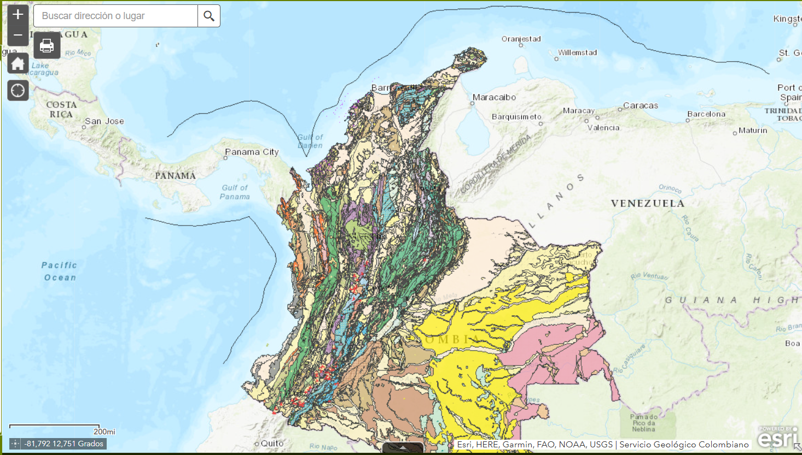
FIGURA 4 MAPA GEOLOGICO DE COLOMBIA, ESCALA 1:1’500.000. FUENTE: Gómez, J., Montes, N.E. & Marín, E., compiladores. 2023.

FIGURA. 5 Mapa geológico de Córdoba, pagina 74. FUENTE: Plan Departamental de Gestión del Riesgo de Desastres - PDGRD (2022 - 2031), pg. 82.
Link: https://drive.google.com/drive/folders/1xR_GkW_4eMc55gBeZLUSJ7mjdjfWr0x8
El mapa elaborado por la Corporación del Valle del Sinú Corporación Autónoma Regional de los Valles del Sinú y del San Jorge (CVS) muestra una gran variedad de formaciones geológicas, lo que significa que en Córdoba hay muchas clases de rocas y suelos que se formaron en diferentes épocas de la historia de la Tierra. Existe una diversidad de rocas en el departamento y está compuesto por más de 30 unidades geológicas diferentes, cada una representada con un color distinto.
Estas unidades geológicas incluyen rocas volcánicas, sedimentarias, ígneas y metamórficas, lo que indica una historia geológica compleja y muy rica.
Al sur y suroccidente de Córdoba (frontera con Antioquia y el municipio de Tierra Alta), se observa un predominio de colores verdes, azules y marrones oscuros, que corresponden a rocas antiguas y montañosas. Mientras que, al norte y noreste (como Montería, Lorica, Sahagún), hay colores más uniformes, como los beige y grises claros, lo que indica zonas más planas y jóvenes, como las llanuras costeras y valles, existen deposición de sedimentos del río San Jorge y sus tributarios, además de los depósitos asociados al sistema de ciénagas de Ayapel y sus alrededores.
2.7.1. Características geomorfológicas generales.
El departamento de Córdoba forma parte de la Gran Llanura del Caribe y presenta dos grandes zonas topográficas o tipos de paisaje:
- Zona de planicies o sábanas
Esta zona está formada principalmente por tierras planas con algunas colinas bajas, cuya altitud no supera los 100 metros sobre el nivel del mar (msnm). El suelo está compuesto por materiales arcillosos y arenosos, propios del Grupo geológico Sincelejo. La distribución al norte y centro: predominan los valles aluviales del Sinú y San Jorge, con espacios planos y bien drenados.
En esta región los valles aluviales de los ríos Sinú y San Jorge, así como la franja costera del norte del departamento son una zona apta para actividades agropecuarias, pero también sensible a inundaciones en épocas de lluvia intensa.
(Fuente: CVS, 2022–2031)
- Zona montañosa y de colinas
Esta región está ubicada al sur y suroccidente de Córdoba y corresponde a las estribaciones (parte final) de la Cordillera Occidental. Se caracteriza por tener cerros con cimas redondeadas, lo que indica la presencia de rocas más resistentes a la erosión, como las de las formaciones Ciénaga de Oro, Porquera y el Miembro Superior del Grupo Sincelejo. Aquí se encuentran pendientes entre 16° y 25° y altitudes que van de 100 a 200 msnm, lo que representa un relieve más quebrado y complejo. Estas condiciones requieren especial atención para la gestión del riesgo y el uso del suelo. (Fuente: SGC, 2013)
2.7.2. Características Generales del Uso del Suelo.
Es fundamental conocer cómo se usa el suelo en el departamento de Córdoba, ya que esta información está relacionada con los recursos naturales y las reservas del territorio. Según la Corporación Autónoma Regional de los Valles del Sinú y del San Jorge (CVS), en el año 2023, el departamento contaba con un total de 1.874.552 hectáreas destinadas a actividades agrícolas, lo que representa el 75% del área total del departamento. Por otro lado, el 6,2% del territorio está cubierto por bosques naturales o zonas que no se usan para la agricultura, y el 18,8% corresponde a áreas protegidas por la ley, en las que no se permite el uso agropecuario.
A continuación, se muestra la distribución del uso del suelo en Córdoba:
| Uso de Suelo Supe | rficie (Has) |
| Frontera agrícola nacional | 1.874.552 |
| Bosque naturales y áreas no agropecuarias | 155.189 |
| Exclusiones legales | 470.118 |
Tabla 6. Tipos de uso de suelo en el Departamento de Córdoba. Fuente: CVS (2023)
2.7.3. Características de la Geología Económica.
En los primeros años del siglo XXI, el sector agropecuario sigue siendo el de mayor participación dentro del PIB del departamento de Córdoba, y la ganadería bovina su principal actividad económica. Por su parte, desde la década de 1980 la minería se convirtió en la segunda actividad productiva del departamento, jalonada esencialmente por la explotación de los yacimientos de ferroníquel. (Fuente: Banco de la República, 2004)
Es importante resaltar que, desde el 2014, el sector minero-energético en cabeza del Ministerio de Minas y Energía ha venido desarrollando proyectos encaminados al fortalecimiento de capacidades respecto a la Gestión del Riesgo de Desastres. A lo largo de las últimas décadas, el Estado ha realizado avances sobre la identificación, caracterización y priorización de factores del riesgo del sector, tanto desde la óptica de rol pasivo como activo, y la participación progresiva en las instancias de coordinación del Sistema Nacional de Gestión del Riesgo de Desastres (SNGRD). Fuente: Política de Gestión del Riesgo de Desastres del sector minero-energético, 2021.
2.7.4. Características de los Yacimientos Minerales.
Según Viloria De La Hoz: La economía minera en el departamento de Córdoba está constituida por la explotación de cuatro recursos: Ferro-níquel, oro, gas natural y carbón. En el periodo 1994-2001 la actividad minera, jalonada por la producción minera de ferroníquel, registrando a una tasa de 9.3% promedio anual; mientras que en el año 1998 la minería departamental tuvo un crecimiento del 38%. El carbón de Córdoba es demandado por la planta de ferroníquel de Cerro Matoso, y la industria cementera de la región Caribe. (Fuente: Viloria de la Hoz, J., 2004)
En relación con la actividad minera, según el reporte de la Agencia Nacional de Minería (ANM), en Córdoba para 2019, en el catastro minero se encuentran vigentes 115 títulos que corresponde a un 4,34% del total de títulos en Colombia, distribuidos en 19 municipios, con una extensión de 180.186,16 hectáreas, lo que corresponde a un 7,51 % de la extensión total del departamento. El 40% de estos títulos es mediana minería, el 29,4% pequeña minería, 23% autorizaciones temporales y 7,6% de gran minería.
Así mismo, según títulos mineros concesionados en Córdoba están divididos por un 44,76% de materiales de construcción, un 25,71% de oro, metales preciosos y cobre, un 14,29% de Carbón, un 11,43% de otros minerales como calizas, arenas y gravas, y un 3,81% de níquel (Ordenanza 0009, 2020).
2.7.5. Características de los Yacimientos de tipo Hidrocarburos.
Según el Acuerdo 11 de 2008 de la Agencia Nacional de Hidrocarburos (ANH) se establece un marco metodológico estandarizado para la técnica de recursos y reservas de hidrocarburos en Colombia. Este acuerdo, expedido por el Consejo Directivo de la ANH, define la forma, contenido, plazos y métodos de valoración de dichos recursos y reservas energéticas.
Para Colombia se establecen actualmente 23 cuencas sedimentarias identificadas con potencial petrolero y para hidrocarburos no convencionales en Colombia. Entre ellas, destacan la cuenca Sinú‑San Jacinto por sus reservas de gas no convencional (CBM y áreas en exploración), mientras que otras como las del Magdalena y Llanos Orientales son ya cuencas maduras con exploración convencional y no convencional en desarrollo. La cuenca sedimentaria correspondiente al departamento de Córdoba es la cuenca Sinú-San Jacinto (SSJ) con 69.221 kilometros cuadrados, 205 pozos y 3 campos de explotación de gas. (Ver la Figura 6)

FIGURA 6 Cuencas sedimentaria Sinú-San Jacinto (SSJ) en el departamento de Córdoba. FUENTE: ANH (2011)
Mediante el Acuerdo 04 de 2017, la Agencia Nacional de Hidrocarburos (ANH) abrió la posibilidad a los interesados de acceder a 15 áreas continentales disponibles, ubicadas en la cuenca sedimentaria Sinú-San Jacinto, con el fin de desarrollar actividades de exploración y producción de hidrocarburos.
En un inicio, las primeras actividades de explotación de gas natural permitieron identificar yacimientos en los municipios de Sahagún y Chinú. Sin embargo, según el Informe de Reservas y Recursos 2023, elaborado por la Agencia Nacional de Hidrocarburos (ANH) y con base en los avisos de descubrimientos importantes de gas entre 2022 y 2024, se reportaron nuevos yacimientos en los municipios de Pueblo Nuevo y Sahagún. Estos hallazgos están siendo desarrollados por empresas operadoras como CLEANENERGY RESOURCES S.A.S., CNE OIL & GAS, entre otras, las cuales contribuyen al desarrollo del gasoducto El Jobo – Mamonal, infraestructura que transporta gas hacia la refinería de Cartagena. (Ver Figura 7)
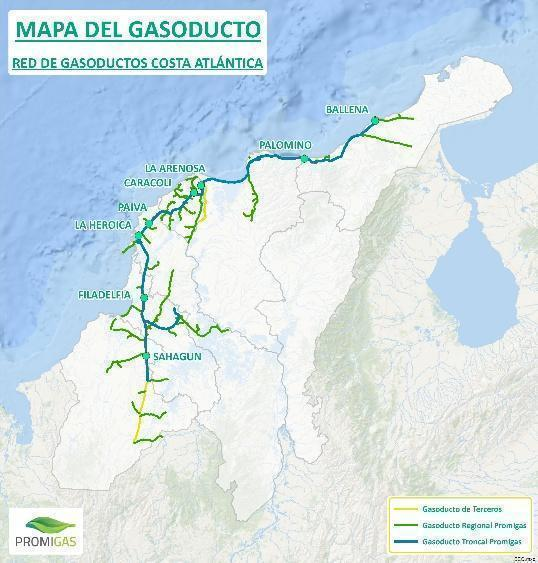
FIGURA. 7 Mapa de las redes de gasoductos en la costa caribe. FUENTE: Promigas (2025)
LINK: https://www.promigas.com/Beo/Paginas/ProcedimientosOperacionales/Mapa-del-gasoducto.aspx
# 3. EL CLIMA EN EL DEPARTAMENTO
3.1. Climatología en general.
De acuerdo con el análisis departamental realizado por el IDEAM (2014), el departamento de Córdoba presenta dos regiones climáticas diferenciadas en su territorio (ver Figura 6). Es importante destacar la función de las estaciones climatológicas del IDEAM, instaladas en los municipios de Chima, Ciénaga de Oro, Montería, Puerto Escondido y Sahagún para el registro de los datos de temperatura máxima. El registro de temperatura máxima para el departamento de Córdoba durante el periodo 1991–2020 fue de 35.3 °C.
Sinú, San Jorge, Bajo Nechí. (Color azul)
Urabá y Bajo Magdalena. (Color amarillo)
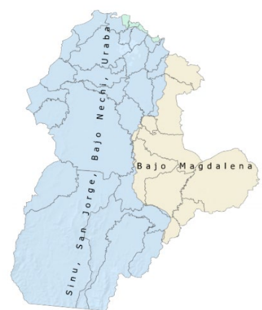
FIGURA. 8 Regiones climáticas en el Departamento de Córdoba, pagina 7. Fuente: FAO-IDEAM (2022).
LINK: https://cambioclimatico.fao.org.co/wp-content/uploads/2023/06/13-CORDOBA_24.02.2023.pdf
3.2. Temperatura promedio por región climática.
En las regiones del Sinú, San Jorge, Bajo Nechí y Urabá, la temperatura máxima se sitúa entre 34,6 °C y 35,1 °C, la temperatura media varía entre 27,4 °C y 28 °C, y la mínima oscila entre 21,1 °C y 21,8 °C.
En la región del Bajo Magdalena, los valores son similares; sin embargo, se observan variaciones más marcadas en la temperatura mínima, que puede descender hasta los 20,7 °C en ciertos periodos.
3.3. Precipitación acumulada.
Las lluvias en las regiones del Bajo Magdalena, es decir, en el Sinú, en el San Jorge, en Bajo Nechí y el Urabá tienen un clima con una sola temporada de lluvias al año. Las precipitaciones más fuertes se presentan entre mayo y octubre, con el pico más alto en agosto para el Bajo Magdalena y entre junio y julio para las otras regiones.
En cambio, la temporada seca ocurre en los primeros meses del año y al final de diciembre, siendo enero y diciembre los meses con menos lluvias. La cuenca del río Sinú recibe menos lluvia en comparación con la región del Bajo Magdalena.
3.4. Variabilidad climática: en relación con los fenómenos de “el niño” y “la niña”, utilizando registros del IDEAM (1975-2020).
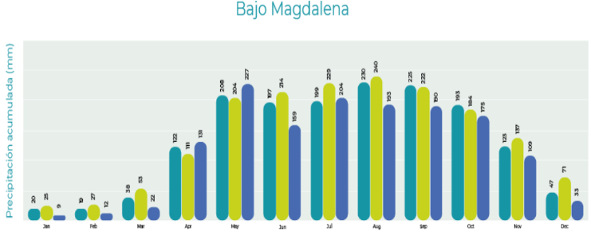


FIGURA 9. Variabilidad climática del “Niño” y “Niña” en las regiones climáticas, páginas 10 y 11. Fuente: FAO (2022).
Link: https://cambioclimatico.fao.org.co/wp-content/uploads/2023/06/13-CORDOBA_24.02.2023.pdf
Estas gráficas de variabilidad climática proyectadas anteriormente, demuestran que el fenómeno “El Niño” afecta principalmente el primer y segundo trimestre del año, reduciendo las lluvias hasta en un 21 %, lo que genera condiciones más secas durante esos meses. Por el contrario,”La Niña” aumenta las lluvias en el segundo y tercer trimestre, justo cuando suelen presentarse las precipitaciones más intensas, con aumentos de más del 15 %.
Esto demuestra que ambos fenómenos climáticos tienen una fuerte influencia en la distribución de las lluvias en estas regiones, y, por tanto, son factores clave para la gestión del riesgo y la planificación ambiental.
3.5. Tercera comunicación de cambio climático del IDEAM.
A continuación, se presentan lo indicadores de la tercera comunicación de cambio climático del departamento de Córdoba y un breve análisis de los escenarios de riesgo proyectados a futuro:
Convenciones:
SA S eguridad Ali mentaria |
RH Recurso Hídrico |
BD Biodi versidad |
S Salud |
HH Hábitat Humano |
I Infraes tructura |
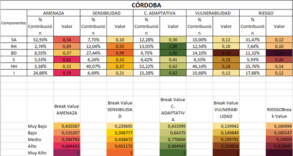
FIGURA 10 Indicadores de la tercera comunicación de cambio climático del departamento. FUENTE: Tomado de IDEAM & UNGRD (2025).
Análisis general de los escenarios climáticos de la tercera comunicación.
Los indicadores del IDEAM enseñan unas proyecciones de valores para los componentes o sectores principales para el desarrollo y sostenibilidad de la comunidad, logrando estimar niveles diferenciados de amenaza, sensibilidad, capacidad adaptativa, vulnerabilidad y riesgo según el sector analizado.
Los componentes o sectores analizados fueron: Seguridad Alimentaria (SA), Recurso Hídrico (RH), Biodiversidad (BD), Salud (S), Habitad Humano (HH) e Infraestructura (I).
Los componentes con mayor peso en la estructura del riesgo son la seguridad alimentaria (SA) y la infraestructura (I), ambos con valores altos de amenaza (0,54 y 0,59 respectivamente), lo que refleja una alta exposición ante eventos extremos como sequías, inundaciones y variabilidad en la precipitación.
El modelo evidencia que estos impactos son consistentes con la vulnerabilidad geográfica del departamento, ubicado entre la región Caribe y el valle del Sinú, zonas fuertemente influenciadas por los cambios en los patrones de lluvia y temperatura proyectados por los modelos climáticos globales. El análisis de riesgo climático para el departamento de Córdoba muestra que el componente de biodiversidad (BD) presenta el mayor nivel de riesgo, con un valor de 0,53, clasificado como muy alto, lo que indica una fuerte amenaza para los servicios ecosistémicos. En contraste, los componentes de salud (HH), infraestructura (I) y recurso hídrico (RH) tienen riesgos más bajos.
Vulnerabilidad y sensibilidad
La vulnerabilidad es más crítica en HH y BD, mientras que la capacidad adaptativa es especialmente baja en BD, lo que agrava el riesgo. Estos resultados resaltan la necesidad urgente de fortalecer acciones de adaptación ambiental, especialmente en zonas con alta presión ecológica.
En otras palabras, los resultados de la sensibilidad indican que el hábitat humano (HH) y la biodiversidad (BD) son los sistemas más frágiles frente al cambio climático, con valores de 0,40 y 0,37 respectivamente. Esto significa que los ecosistemas y las poblaciones humanas de Córdoba muestran una alta respuesta negativa a pequeñas variaciones climáticas, debido a la degradación ambiental, deforestación, expansión agropecuaria y urbanización sin control.
En contraste, el recurso hídrico (RH) y la salud (S) presentan niveles de sensibilidad moderados, lo que sugiere que las fuentes de agua y los sistemas de atención sanitaria podrían mantener cierto grado de resiliencia si se implementan medidas preventivas.
Capacidad adaptativa y desigualdades territoriales
El componente de capacidad adaptativa revela una situación preocupante: la mayoría de los sectores claves muestran valores bajos (inferiores a 0,6), salvo el recurso hídrico y la biodiversidad, que alcanzan valores de 1, indicando mayor posibilidad de respuesta institucional y ambiental. Esto refleja una asimetría adaptativa, donde los ecosistemas naturales conservan una capacidad de recuperación más alta que las comunidades humanas o la infraestructura física.
Los municipios con mayores valores de riesgo total, como San Bernardo del Viento, Lorica, Cereté y Montería, se localizan en zonas bajas y costeras del Sinú y San Jorge, las cuales son altamente expuestas a inundaciones y aumentos del nivel del mar, según los escenarios modelados a 2040–2070.

FIGURA 11 Indicadores de cambio climático por municipio del departamento de Córdoba. Fuente: Tomado de IDEAM (2022).
Conclusiones
Como se observa el departamento de Córdoba clasifica como riesgo muy alto por diversidad, es decir, amenaza que el cambio climático representa para la pérdida de servicios ecosistémicos y riesgo medio en el indicador de salud, lo cual se refiere a un nivel de riesgo moderado que enfrenta la población debido a los impactos del cambio climático en la salud pública. Los cinco municipios del departamento en el riesgo muy alto por los seis indicadores de la tercera comunicación son: San Bernardo del Viento, Lorica, Cereté, Montería, Cotorra.
San Bernardo del Viento, por ejemplo, evidencia un alto riesgo en salud (0.25) y biodiversidad (0.18), lo que resalta la urgencia de implementar acciones de prevención y adaptación. En contraste, municipios como San Carlos, Chinú y Purísima presentan un riesgo medio a bajo, lo que permite orientar estrategias diferenciadas de intervención.
En conjunto, los resultados del IDEAM proyectan que Córdoba experimentará un aumento en la frecuencia e intensidad de los eventos climáticos extremos, especialmente lluvias intensas, inundaciones costeras y estrés hídrico en zonas agrícolas. El componente de biodiversidad (valor 0,53) representa el mayor nivel de riesgo, seguido del hábitat humano y la infraestructura, lo que implica una amenaza combinada sobre los ecosistemas y la calidad de vida de la población.
La vulnerabilidad estructural, sumada a la baja capacidad de adaptación en sectores rurales, advierte sobre la necesidad urgente de fortalecer la planificación ambiental, la gestión del riesgo y las estrategias de adaptación local, priorizando municipios del litoral y cuenca media del Sinú, donde la presión ecológica y el cambio climático convergen con mayor intensidad.
3.6. Cuarta comunicación de cambio climático
En su reciente actualización, el IDEAM hace referencia al documento Escenarios de Cambio Climático en Colombia (2025), basándose en las bases físicas del Sexto Informe de Evaluación (en adelante, AR6); este hito fue elaborado el 2021 por un Grupo Intergubernamental de Expertos sobre el Cambio Climático (en adelante, IPCC). Este informe presenta los experimentos y las modelaciones generadas en la sexta fase del proyecto de intercomparación de modelos acoplados para los escenarios de cambio climático del territorio nacional (en adelante, CMIP6). El proyecto incluye simulaciones a largo plazo del clima en el siglo XX y proyecciones para el siglo XXI, así como algunas para el siglo XXII desde nuevos escenarios llamados trayectorias socioeconómicas compartidas (en adelante, SSP).
En la actualidad, el proyecto CMIP6 lo integran 88 grupos internacionales de modelación, los cuales utilizan modelos acoplados océano-atmósfera (AOGCM), y algunos usan los Earth System Models; estos últimos, además de la atmósfera y el océano, incluyen en sus simulaciones la vegetación y el ciclo de carbono interactivo (IPCC, 2021). De tal modo, los modelos son la única herramienta disponible actual para hacer un análisis climático futuro, y solo algunas instituciones como universidades, centros meteorológicos y de investigación en clima logran tener la capacidades tecnológicas, físicas, investigativas y de personal para desarrollar o correr este tipo de modelos.
Es importante recordar que un escenario de cambio climático es una descripción coherente,
consistente y convincente de un posible estado futuro del clima.
Por lo tanto, los escenarios no deben asumirse como pronósticos o predicciones, sino como una imagen alternativa de cómo el futuro puede mostrarse desde determinadas condiciones en un tiempo dado (Fundación Biodiversidad et al., 2013). Por lo general, se utiliza un conjunto de ellos con el fin de mostrar, de la mejor manera, el rango de incertidumbre en las proyecciones climáticas ante diferentes combinaciones de condiciones económicas, medioambientales, de crecimiento poblacional, políticas, entre otras (Instituto de Hidrología, Meteorología y Estudios Ambientales, 2015).
En términos generales, los expertos del IPCC establecen cinco escenarios posibles (SSP), y son los siguientes:
SSP1 (“sustentabilidad”). Este escenario tiene los siguientes supuestos: bajo crecimiento de la población, alto crecimiento económico, altos niveles de educación, gobernabilidad, una sociedad globalizada, cooperación internacional, desarrollo tecnológico y conciencia ambiental. Teniendo en cuento lo anterior, este escenario representa bajos niveles de desafíos de mitigación y adaptación.
SSP3 (“fragmentación”). En este escenario se asumen: alto crecimiento poblacional y bajo desarrollo económico, niveles inferiores de educación y una sociedad regionalizada y con poca conciencia ambiental, lo cual representa un nivel alto de desafíos para la adaptación y la mitigación.
SSP4 (“desigualdad”). Desde este escenario, la tecnología avanza en los países desarrollados, pero no toda la población logra beneficiarse de ella; esto representa un nivel alto para la adaptación.
SSP5. Este escenario asume que aún se tiene una muy alta dependencia de los combustibles fósiles y un bajo crecimiento en la población, así como un elevado crecimiento económico y un alto desarrollo humano, por lo que representa un nivel alto de desafío para la mitigación.
SSP2. Este es un escenario intermedio, en el cual los supuestos están entre los que corresponden a los SSP1 y SSP3.
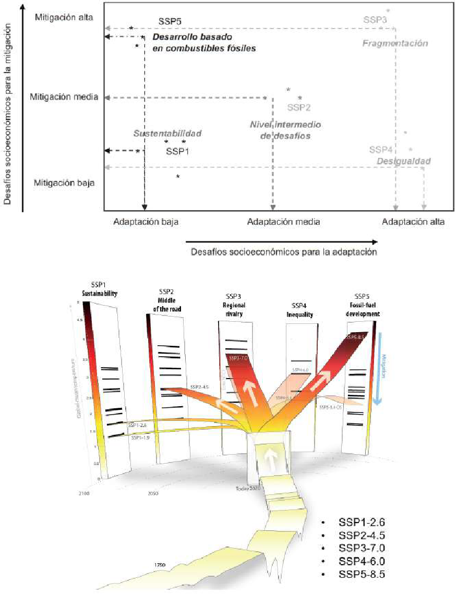
FIGURA 12 ESCENARIOS DE CAMBIO CLIMATICO PROYECTADOS POR AR 6. FUENTE: Escoto Castillo et al . (2017)
Link:https://drive.google.com/file/d/1QOJ5VKz6-xRtQN1GHx6x03Izj7V965cq/view?usp=drive_link
Con base en las definiciones anteriores, en las siguientes secciones se exponen las proyecciones climáticas futuras de precipitación, temperaturas media, máxima y mínima, humedad relativa, velocidad del viento y radiación para el siglo XXI, las cuales corresponden a los escenarios de cambio climático que se deben incorporar en la Cuarta Comunicación Nacional de Colombia.
Análisis general de los escenarios climáticos SSP
Para el departamento de Córdoba, estos escenarios permiten anticipar cómo las decisiones globales en materia de energía, economía y gobernanza podrían modificar las condiciones de temperatura y precipitación hacia el año 2100.
Según los mapas de la ECC4CN, las proyecciones para Córdoba muestran reducciones en la precipitación anual entre –2,6 % (SSP1) y –8,5 % (SSP5), y un aumento sostenido de las temperaturas máximas y mínimas, especialmente hacia finales del siglo. Estas variaciones implican alteraciones significativas en el balance hídrico, la productividad agrícola y la estabilidad de los ecosistemas del Caribe interior colombiano.
Referente al comportamiento de la precipitación: Los resultados del IDEAM indican que bajo escenarios de sustentabilidad (SSP1), Córdoba experimentaría una leve disminución de la precipitación (–2,6 %), lo que sugiere un futuro relativamente estable si se mantienen políticas de mitigación y manejo ambiental sostenido. Sin embargo, bajo SSP2 y SSP3, la reducción oscila entre –4,5 % y –7 %, evidenciando un deterioro progresivo de las lluvias y una mayor probabilidad de déficits hídricos estacionales en cuencas como el Sinú y el San Jorge. El escenario más crítico, SSP5 (–8,5 %), proyecta un contexto de aridez extendida, con afectación directa sobre la recarga de acuíferos, disponibilidad de agua para riego y regulación hídrica de humedales y ciénagas. En síntesis, la tendencia general apunta a un descenso gradual en las lluvias anuales, acompañado de un aumento en la irregularidad interanual y mayor riesgo de sequías prolongadas.
Referente a las tendencias de temperatura: Las proyecciones térmicas revelan un aumento sostenido de la temperatura media anual en Córdoba, tanto en los valores máximos como mínimos. El incremento de la temperatura máxima se proyecta entre +1,5 °C y +3 °C hacia mediados de siglo, y podría alcanzar +4 °C o más bajo los escenarios SSP3 y SSP5 para finales del siglo XXI. Paralelamente, la temperatura mínima aumenta en rangos similares, lo cual reduce la amplitud térmica diaria y modifica los ciclos de evapotranspiración. Este calentamiento homogéneo podría provocar estrés térmico en cultivos tropicales, reducción de rendimientos agrícolas y mayor demanda energética por refrigeración en centros urbanos como Montería y Lorica. A nivel ecosistémico, se espera un desplazamiento altitudinal de especies, pérdida de hábitats húmedos y afectación a la biodiversidad ribereña del Sinú.
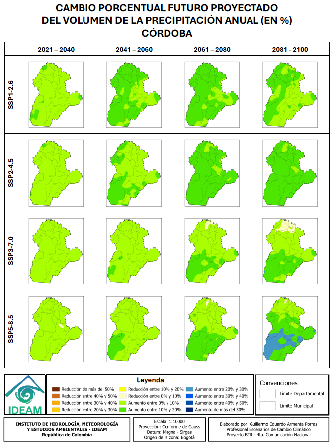
FIGURA 13 TENDENCIAS Y PROYECCIONES PARA LOS ESCENARIOS DE PRECIPITACION AL DEPARTAMENTO DE CORDOBA. FUENTE: IDEAM (2025)
LINK: https://drive.google.com/file/d/1F0r1mJKU387P8f3dV2EZAcpNrfoGNYoS/view?usp=drive_link

FIGURA 14 TENDENCIAS Y PROYECCIONES PARA LOS ESCENARIOS DE TEMPERATURAS MAXIMAS ANUALES EN EL DEPARTAMENTO DE CORDOBA. FUENTE: IDEAM (2025)
LINK: https://drive.google.com/file/d/15QFMh3ZtMu5xEWg17UpTwH7_JftKZ0TV/view?usp=drive_link
Conclusiones e interpretaciones finales.
En resumen, los escenarios climáticos del IDEAM advierten que Córdoba será más cálido y más seco en todos los escenarios futuros, con mayor severidad bajo trayectorias de desarrollo insostenible (SSP3 y SSP5). La reducción de lluvias y el incremento térmico se traducen en mayor vulnerabilidad hídrica, afectando la agricultura, la ganadería y los ecosistemas acuáticos que sustentan la economía y el bienestar regional. Los municipios del medio y bajo Sinú —como Cereté, Lorica, San Bernardo del Viento y Purísima— enfrentarán un riesgo combinado de sequías, pérdida de productividad y deterioro de la calidad del agua, mientras que los sectores costeros podrían sufrir intrusión salina y degradación de humedales costeros.
En términos de gestión del riesgo y adaptación, los escenarios SSP enfatizan la necesidad de fortalecer políticas de ordenamiento territorial climático, conservación de fuentes hídricas, transición energética y agricultura resiliente. Córdoba deberá priorizar estrategias basadas en gestión integral del agua, restauración de cuencas, monitoreo climático local y educación ambiental, con el fin de reducir su exposición ante los impactos del cambio climático. En los escenarios más sostenibles (SSP1–SSP2), la región aún puede estabilizar su balance hídrico, pero bajo trayectorias de fragmentación o dependencia fósil (SSP3–SSP5), el riesgo de degradación ambiental y pérdida socioeconómica será alto y creciente hacia finales del siglo.
# 4. ÁREAS DE IMPORTANCIA AMBIENTAL DEPARTAMENTAL
Es importante mencionar, el departamento de Córdoba forma parte del bloque de la región Caribe y representa 23.980 km2 del territorio nacional. Cuenta con 30 municipios y en un territorio determinado geográficamente por las serranías de Abibe, San Jerónimo y Ayapel.
Desde el sur del departamento muestra una región montañosa, en la que se encuentra una fracción del Parque Nacional Natural Paramillo, que es una de las mayores concentraciones de biodiversidad representativa para el país y lugar de nacimiento de los ríos Sinú y San Jorge. Sus sistemas montañosos, que llegan a la zona costera, presentan alturas de hasta 2.200 msnm. De esta manera su orografía, su hidrografía (ríos San Jorge, Sinú y Canalete) y su íntima relación con la costa.
En un informe del año 2005, la CVS, muestra la subregionalización ambiental del departamento, que presenta un alto grado de homogenización geográfica y ambiental, e integra los nuevos municipios creados con la Constitución de 1991, la cual se disgrega así:
Alto Sinú, constituida por los municipios de Tierralta y Valencia.
Medio Sinú, constituida por los municipios de Montería, Cereté, Ciénaga de Oro, San Carlos y San Pelayo.
Bajo Sinú, constituida por los municipios de Lorica, Purísima, Momil, Chimá, Cotorra, y Tuchín.
Sabanas, constituida por los municipios de Sahagún, Chinú, Pueblo Nuevo y San Andrés de Sotavento.
San Jorge, constituida por los municipios de Planeta Rica, Montelíbano, Buenavista, Puerto Libertador, Ayapel y San José de Uré.
Costanera, constituida por los municipios de San Antero, San Bernardo del Viento, Moñitos, Los Córdobas, Canalete y Puerto Escondido.
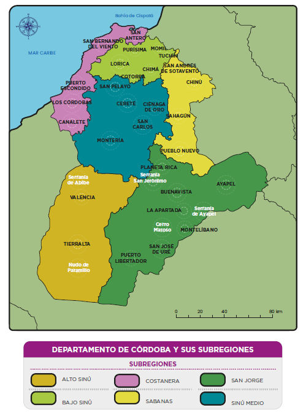
FIGURA 15 Mapa de las subregiones ambientales del departamento. FUENTE: Fundación Herencia Ambiental Caribe (2020)
4.1. Parques nacionales naturales (PNN).
Extensión (km2): Según la dirección del PNN (2025), el departamento de Córdoba dentro de su jurisdicción tiene dos (2) PNN declarados, su extensión aproximada es de 646.838 Hectáreas. Sus nombres son: PNN Corales de profunda y PNN Paramillo.
En el departamento de Córdoba, el PNN Paramillo protege una amplia zona montañosa que abarca municipios como Tierralta, Montelíbano y Puerto Libertador, donde se conservan selvas húmedas tropicales, fuentes hídricas como el río Sinú y hábitats de especies como el jaguar y el mono aullador. Por otro lado, el PNN Corales de Profundidad se localiza en el mar Caribe, frente a las costas de San Bernardo del Viento y Moñitos, y resguarda ecosistemas marinos únicos con corales, peces tropicales y tortugas. Ambos parques son fundamentales para la conservación ambiental y el equilibrio ecológico en Córdoba.
NÚMERO DE HECTÁREAS DE PNN EN EL DEPARTAMENTO DE CÓRDOBA
| Nro. | Región | Nombre | Extensión (Has) |
| 1 | Caribe | PNN Corales de Profunda | 142.195 |
| 2 | Caribe | PNN Paramillo | 504.643 |
Tabla 7 Número de parques Nacionales Naturales en el departamento. FUENTE: PNN (2025).
4.2. Áreas arqueológicas protegidas.
La autoridad en Colombia en materia de patrimonio arqueológico es el Instituto Colombiano de Antropología e Historia (ICANH)1, el cual registra los hallazgos y bienes arqueológicos del país, y además declara las áreas arqueológicas protegidas en el territorio nacional. El Instituto Colombiano de Antropología e Historia tiene un geoportal en su página web, donde muestra la ubicación de los sitios arqueológicos. Se anexa el link en las referencias.
En Córdoba, estos registros se presentan de forma global: un solo sitio puede incluir varios yacimientos. Por ejemplo, en la región del medio y bajo río San Jorge, se han identificado 134 sitios arqueológicos según estudios previos. Es importante aclarar que esta información es preliminar y debe validarse con exploraciones arqueológicas en el territorio.
Los municipios con registros arqueológicos fueron: Ayapel, Buenavista, Montelíbano, Planeta Rica, Pueblo Nuevo, Puerto Libertador, San Marcos. (Ver la tabla 8)
Tabla 8 Hallazgos arqueológicos en el departamento. Fuente: ICANH (2025).
| Municipio N° D Ayapel | e hallazgos arqueológico en los municipios 9 |
| Buenavista | 4 |
| Montelíbano | 45 |
| Planeta Rica | 14 |
| Pueblo Nuevo | 2 |
| Puerto Libertador | 19 |
| San Marcos | 1 |
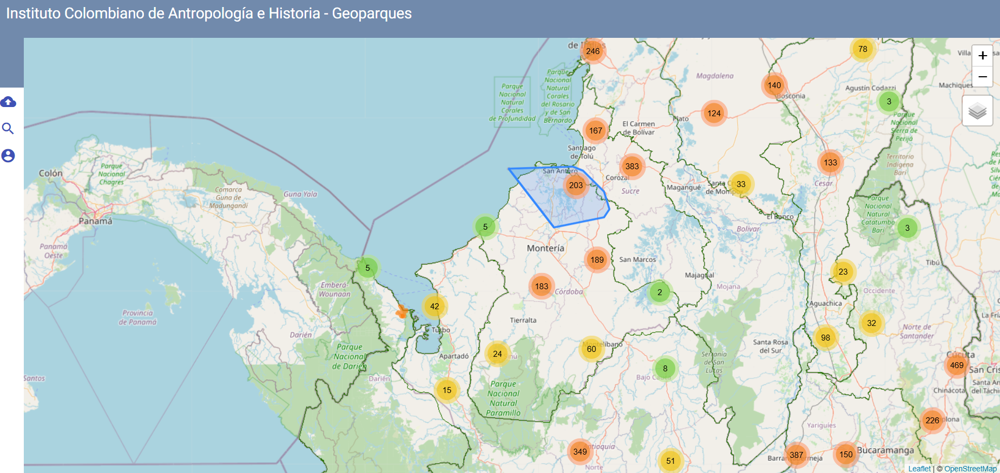
FIGURA 16 Visor web del ICANH. Fuente: https://geoparques.icanh.gov.co/#/
4.3. Ecosistemas estratégicos.
La creación del Sistema de Áreas Protegidas en Colombia se basa en un enfoque que busca conservar los ecosistemas. Para su gestión, se creó el Registro Único Nacional de Áreas Protegidas (RUNAP), según lo establecido en los Decretos 2372 de 2010 y 3572 de 2011. Esta herramienta es administrada por Parques Nacionales Naturales de Colombia y permite que cada Autoridad Ambiental registre las áreas protegidas que tiene a su cargo, a través de una plataforma nacional.
Según el Registro Único Nacional de Áreas Protegidas (RUNAP), en el departamento de Córdoba existen 19 áreas protegidas inscritas, registradas y declaradas por la Autoridad ambiental departamental (CVS, 2020).
Link del RUNAP para Córdoba: https://runap.parquesnacionales.gov.co/area-protegida/215
Tabla 9 Ecosistemas estratégicos registrados en el RUNAP. Fuente: Autores adaptado del RUNAP (2025).

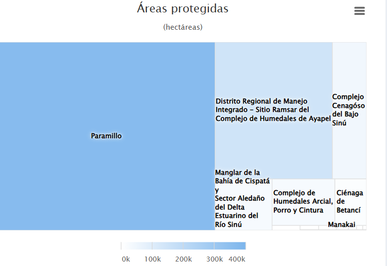
FIGURA 17 Áreas protegidas en el Departamento de Córdoba. Fuente: RUNAP – PNN (2025).
Este gráfico muestra las áreas protegidas en el departamento de Córdoba, destacando su tamaño en hectáreas. El Parque Nacional Natural Paramillo es, con gran diferencia, el área protegida más extensa, superando las 400 mil hectáreas. Le siguen el Distrito Regional de Manejo Integrado del Complejo de Humedales de Ayapel y el Complejo Cenagoso del Bajo Sinú, que también representan zonas claves de conservación ambiental. Áreas como el Manglar de la Bahía de Cispatá y los complejos de humedales cumplen un papel vital en la protección de ecosistemas costeros y de agua dulce. Este tipo de conservación es fundamental para preservar la biodiversidad, el agua y los medios de vida de comunidades locales.
4.3.1. Tipos de ecosistemas estratégicos.
En el departamento de Córdoba existe una serie de ecosistemas estratégicos, los cuales han surtido un proceso de delimitación y zonificación. A continuación, se describen los tipos de ecosistemas y las extensiones representadas en hectáreas con las que cuenta el departamento de Córdoba, se resalta en negro las extensiones más altas en el departamento.
Tabla 10 Tipos de ecosistemas en el Departamento de Córdoba. Fuente: CVS (2022).
| Tipología Nomb | re Extensió | n (Ha) |
| Humedal | DMI CISPATA | 27.171 |
| Ciénaga | Complejo Cienagoso del Bajo Sinú | 42.013 |
| Ciénaga | Complejo Baño y los Negros | 1.039 |
| Ciénaga | Corralito | 1.264 |
| Humedal | Sierra Chiquita, Los Araujos y el Batallón. | 763.5 |
| Ciénaga | Betancí | 13.415 |
| Ciénaga | Arcial, Porro y Cintura | 26.404 |
| Complejo de Humedales | Ayapel | 145.512 |
| Humedal | Pantano pareja | 2.090 |
| Bosque | Cerro Colosina | 668.4 |
| Humedal | Las Marias | 3.594 |
| Bosque | Cerro Laguneta | 427.38 |
4.4. Cuencas hidrográficas.
Dentro de la jurisdicción departamental, la CVS, el Instituto de Hidrología, Meteorología y Estudios Ambientales (IDEAM) ha identificado seis cuencas hidrográficas: Río Alto Sinú, Río Medio-Bajo Sinú, Río Alto San Jorge, Río Bajo San Jorge, Río Canalete-Río Los Córdobas, Río Mangle y otros arroyos directos del Caribe. Además de los arroyos directos del Golfo de Morrosquillo, cuya extensión dentro del departamento de Córdoba es mínima. Asimismo, la región cuenta con seis acuíferos y una gran cantidad de cuerpos de agua, incluyendo ciénagas, arroyos, embalses y represas.
Tabla 11 Fuentes hídricas en jurisdicción del departamento de Córdoba. Fuente: Autor (2024).
| Nro. Cuen | ca Área (Ha | ) |
| 1 | Rio Alto Sinú | 376.410 |
| 2 | Rio Medio y bajo Sinú | 941.476 |
| 3 | Rio San Jorge Alto | 376.410 |
| 4 | Rio San Jorge Bajo | 626.085 |
| 5 | Rio Canalete-Rio Los Cordobas | 119.138 |
| 6 | Rio Mangle y otros arroyos del Caribe | 11.746 |
A continuación, se expone el mapa de la distribución de la red hidrográfica del departamento de Córdoba, en base del mapa digital del IGAC (2002), este insumo grafico permite visualizar los principales ríos, los cuerpos de agua más representativos del departamento, las cabeceras municipales (color rojo) y puertos fluviales y marítimos en el departamento. (Ver figura 17)

FIGURA 18 Mapa hidrográfico del departamento de Córdoba. FUENTE: Sociedad Geográfica de Colombia
# 5. IDENTIFICACIÓN DE ESCENARIOS DE RIESGO
## 5.1. Antecedentes históricos.
Desde la adopción de la Ley 1523, Colombia ha experimentado un cambio de perspectiva en cuanto a la forma de abordar el riesgo. Esto es, pasar de un enfoque de Gestión de Desastres a una visión prospectiva de Gestión del Riesgo de Desastres (Suárez-Paba, Cruz, & Muñoz, 2020). Esto ha implicado transformaciones que involucran no sólo a las entidades del sector público sino también a aquellas del sector privado y al público en general.
5.1.1. Cifras de emergencias reportadas por el departamento durante 1938-2024.
La gráfica circular muestra que la inundación representa la amenaza más frecuente, con un 51,2%, seguida por los incendios forestales con un 20,5%. Otras amenazas relevantes son los vendavales (11,2%) y los incendios estructurales (aprox. 5%). Las amenazas como sequía, deslizamientos, avenidas torrenciales, lluvias y desabastecimiento de agua tienen una participación menor, pero significativa. Esta distribución sugiere que la gestión del riesgo debe priorizar medidas frente a inundaciones y fenómenos climáticos extremos.
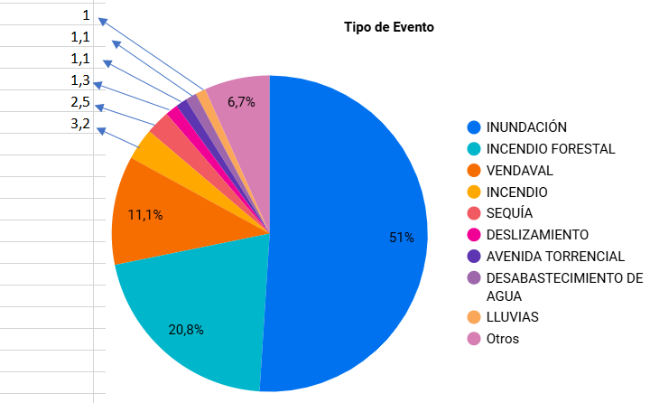
FIGURA. 19 Consolidado de eventos históricos en el Departamento de Córdoba (1938-2023). Fuente: UNGRD (2024)
Según el visor de consolidado de emergencias se reportaron 2.088 eventos durante el periodo del 1938-2024, las perdidas y daños totales de estos eventos sumaron 148 personas fallecidas, 28 personas desaparecidas, 20.767 heridos, en total 2.172.506 personas afectadas, 7.224 viviendas destruidas y 171 centros educativos afectados.

FIGURA 20 Reporte de afectaciones por eventos presentados en el departamento de Córdoba (1938-2024). Fuente: UNGRD (2024)
5.1.2. Análisis de los municipios con más reportes de emergencias (1938-2023).

FIGURA 21 Reporte de afectaciones en municipios por eventos presentados en el departamento de Córdoba (1938-2024). Fuente: UNGRD (2024)
La distribución porcentual de eventos reportados por los municipios de Córdoba es liderada por Montería (15%) y Lorica (9.8%) como los municipios con más eventos. Después, se destaca Cereté (9.1%) y Tierralta (6.7%), mientras que municipios como Montelíbano, San Pelayo y otros, tienen reportes de eventos menores al 8%.
## 5.2. Caracterización de los escenarios de riesgo según el PDGRD.
5.2.1. Priorización de amenazas.
Tabla 12 Eventos priorizados en el Departamento de Córdoba. Fuente: PDGRD (2023).
| Fenómeno Amenazante Identificado/Priorizados | Municipios Priorizados. | |
| 1 | Inundación | Municipios de Cerete, San Pelayo, San Carlos, cuenca media Rio Sinú, Ciénaga de Oro, Valencia, San Bernardo del Viento, San Antero, San José de Ure, Pueblo Nuevo |
| 2 | Movimientos en masa | San Carlos, Montería, Lorica, San Antero, San Andrés de Sotavento, Planeta Rica y Pueblo Nuevo |
| 3 | Vendavales | Cuenca media Rio Sinú, Lorica, Momil, Chima y Purísima. Tierralta, Tuchín |
| 4 | Incendios Forestales | Ciénaga Grande de Lorica, Bajo Sinú, San Andrés de Sotavento |
| 5 | Erosión Fluvial | Tierralta |
| 6 | Erosión Costera | Puerto Escondido, San antero, Los Córdobas |
| 7 | Diapirismo de Lodo | Canalete |
5.2.2. Amenazas origen natural.
5.2.2.1 Vendavales.
Los vendavales en el departamento de Córdoba representan una amenaza frecuente, caracterizada por vientos fuertes y destructivos que alcanzan velocidades de hasta 80 km/h en cortos periodos de tiempo, lo que genera afectaciones significativas en la infraestructura vital, industrial, redes de servicios públicos y sectores agropecuarios.
Su ocurrencia se ve favorecida por fenómenos climáticos como el calentamiento global y el aumento de lluvias y tormentas, mientras que la deforestación y la remoción indiscriminada de la cobertura vegetal incrementan la vulnerabilidad de las comunidades al eliminar las barreras naturales contra estos vientos (CVS, 2018).
En este contexto, la baja resistencia estructural de las viviendas y edificaciones en zonas con pendientes bajas agrava los impactos, evidenciando la necesidad de implementar medidas de mitigación tanto estructurales como no estructurales para reducir el riesgo en las zonas más expuestas (CVS, 2017).
Históricamente, los municipios más afectados por vendavales en Córdoba son aquellos situados en las cuencas de los ríos Sinú y San Jorge, así como en la subregión Costanera, destacándose Moñitos, Canalete y San Bernardo del Viento, junto con Pueblo Nuevo y Tuchín, que han registrado eventos de gran magnitud (CVS, 2018).

FIGURA 22 Mapa de municipios afectados por vendavales en el departamento de Córdoba. Fuente: Plan Departamental de Gestión del Riesgo de Desastres, Gobernación de Córdoba y CVS (2021), versión pdf, pg. 251.
Este mapa muestra los municipios del departamento de Córdoba afectados históricamente por vendavales, marcados en color rojo. La mayor parte del territorio, especialmente en el centro, sur y suroccidente, ha sido impactada por estos fenómenos climáticos. Municipios como Tierralta, Montelíbano, Puerto Libertador y Montería presentan alta recurrencia. Las zonas del norte y oriente muestran menor afectación, aunque no están exentas. Esta información es clave para fortalecer alertas tempranas y mejorar la infraestructura ante eventos de vientos fuertes.
5.2.2.2. Sequías.
La sequía en el departamento de Córdoba se ha convertido en un fenómeno recurrente con graves implicaciones ambientales, económicas y sociales. De acuerdo con la UNGRD, la sequía se define como la escasez temporal de agua en una región en comparación con las condiciones habituales, fenómeno que en Colombia está influenciado por el cambio climático y eventos macroclimáticos como El Niño. Este último ha generado impactos severos en el departamento, provocando racionamientos eléctricos, disminución de los caudales de ríos y cuerpos de agua, incendios forestales y afectaciones a la salud pública (CVS, 2017).
La variabilidad climática ha hecho que zonas específicas, como la región costera, sean particularmente vulnerables al desabastecimiento hídrico, afectando directamente a municipios como Los Córdobas, Moñitos, Puerto Escondido, San Bernardo del Viento y San Antero (CVS, 2018). Uno de los sectores más afectados por la sequía es el hídrico, ya que la reducción de precipitaciones impacta el abastecimiento de agua para acueductos municipales y rurales. Además, el déficit de lluvias provoca que los caudales ecológicos disminuyan a niveles críticos, afectando el equilibrio ambiental de los ecosistemas (CVS, 2017).
El sector eléctrico también enfrenta desafíos debido a la reducción del caudal de los embalses, lo que limita la generación hidroeléctrica y obliga a un mayor uso de energía térmica. En el sector agropecuario, la sequía impacta la producción de pastos, lo que disminuye la producción de leche y carne, afectando gravemente la economía local. Según la Federación de Ganaderos (FEDEGAN), en la sequía de 2014 – 2015 se reportó la pérdida de aproximadamente 24.500 hectáreas y la muerte de 4.700 cabezas de ganado en Córdoba (CVS, 2018).
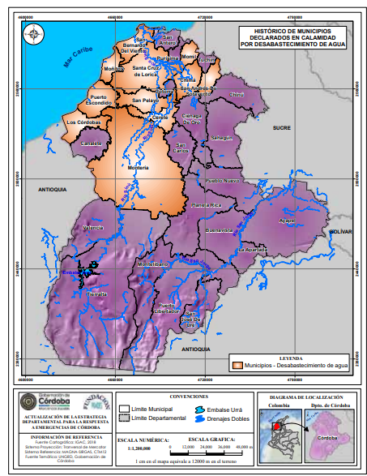
FIGURA 23 Mapa de municipios declarados en calamidad pública por desabastecimiento de agua potable. Fuente: Plan Departamental de Gestión del Riesgo de Desastres, Gobernación de Córdoba y CVS (2021), versión pdf, pg. 243.
Este mapa muestra los municipios de Córdoba que han sido declarados en calamidad pública por desabastecimiento de agua potable, resaltados en color naranja. La mayoría se ubican en la zona norte y noroeste del departamento, incluyendo San Antero, San Bernardo del Viento, Lorica, Montería y Los Córdobas. Estas zonas enfrentan dificultades para acceder al agua, a pesar de estar cerca del mar o de fuentes superficiales. El sur del departamento no presenta reportes de esta emergencia. Este análisis ayuda a priorizar inversiones en infraestructura hídrica y planes de contingencia en los territorios.
Prácticas inadecuadas, como quemas agrícolas y fogatas para ampliar la frontera ganadera y agricola, aumentan la vulnerabilidad de los bosques, incrementando el riesgo de pérdida de cobertura vegetal. La sequía en Córdoba es, por tanto, un fenómeno multidimensional que requiere estrategias integrales de prevención y mitigación para reducir sus impactos en los distintos sectores afectados.
5.2.3. Amenazas de origen socio natural.
5.2.3.1. Inundaciones.
Las inundaciones en el departamento del Córdoba son eventos recurrentes influenciados por lluvias intensas y fenómenos climáticos como “El Niño” y “La Niña”, lo que genera desbordamientos de ríos y graves afectaciones a la población, infraestructura y sector agropecuario (IDEAM, 2020). Factores como la urbanización, la expansión agrícola y la construcción de infraestructura han modificado el comportamiento natural de las cuencas, aumentando la vulnerabilidad de los territorios (UNGRD, 2021).
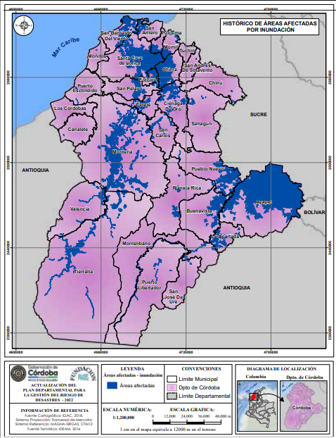
FIGURA 24 Histórico de áreas afectadas por inundación en el departamento de Córdoba. Fuente: Plan Departamental de Gestión del Riesgo de Desastres, Gobernación de Córdoba y CVS (2021), versión pdf, pg. 196.
Este mapa muestra las zonas históricamente afectadas por inundaciones en el departamento de Córdoba, resaltadas en color azul oscuro. Las áreas más impactadas se encuentran en municipios como Ayapel, Lorica, San Bernardo del Viento, San Pelayo, Montelíbano y Puerto Libertador. Estas zonas coinciden con ríos y ciénagas, lo que las hace propensas a desbordamientos. La mayor concentración de eventos se da en la región norte y suroriente del departamento. Esta información es clave para prevenir futuros desastres y planificar adecuadamente el uso del suelo.
Los ríos Sinú y San Jorge representan los mayores riesgos de inundación en la región. El río Sinú, especialmente en el Complejo Cenagoso del Bajo Sinú, ha visto alterado su régimen hídrico debido a la construcción del embalse Urra, incrementando el riesgo en algunas zonas (Cardona et al., 2019).
En el caso del río San Jorge, municipios como La Apartada y Pueblo Nuevo han enfrentado eventos en los que el 80% del territorio ha quedado inundado en épocas de lluvia (UNGRD, 2022). Se han identificado más de 300 puntos críticos, con un 6,31% en riesgo alto en el Sinú y 5,3% en el San Jorge, principalmente en áreas ribereñas con condiciones socioeconómicas frágiles (IDEAM, 2021).
La pérdida de cultivos y la interrupción de actividades económicas agrícolas representan un desafío para la seguridad alimentaria y el desarrollo económico de la región (FAO, 2020). Asimismo, los eventos de inundación generan desplazamientos temporales o permanentes, aumentando la presión sobre los sistemas de atención humanitaria y los procesos de reubicación de la población afectada (UNHCR, 2022).
Respecto a información disponible en materia de inundaciones para el Departamento del Córdoba, se observa que el IDEAM realizó los siguientes a Escala 1:2.000:
Ayapel: Amenaza, Profundidad y Velocidad de Flujo
Momil: Amenaza, Mancha, Profundidad y Velocidad de Flujo
Montelíbano: Amenaza, Profundidad y Velocidad de Flujo
5.2.3.2. Avenidas torrenciales.
Cerca del 80% de la población del país reside en zonas aledañas al Sistema Montañoso de los Andes, lo cual genera condiciones de susceptibilidad muy altas debido a la topografía, a las condiciones geológicas pues el sistema montañoso está constituido por formaciones relativamente jóvenes y en evolución, además de los altos volúmenes de precipitación que se presentan anualmente.
La conjunción de las características mencionadas, permiten la formación de flujos rápidos que circulan por cauces con pendientes altas, transportando una mezcla de agua y sólidos provenientes de las laderas adyacentes o del lecho del cauce y depositándolos una vez llega a zonas de baja pendiente. Frente a este fenómeno que ha dejado un número significativo de muertes en el país, la Unidad Nacional para la Gestión del Riesgo de Desastres (UNGRD) presentó una priorización de cuencas a nivel municipal por riesgo de las avenidas torrenciales.
| Nro. Muni | cipios Priorida | d N° eventos | Drenaje | |
| 1 | Puerto Libertador | ALTA | 7 | Quebrada Lucas |
| 2 | Montelíbano | ALTA | 4 | Quebrada Muchajagua |
| 3 | Tierralta | ALTA | 3 | Arroyo La Burra |
Tabla 13 Priorización de municipios con escenarios de amenaza por avenidas torrenciales. Fuente: UNGRD (2022).
Recientemente, el Servicio Geológico Colombiano (SGC, 2021) construyó la “Guía metodológica para zonificación de amenaza por avenidas torrenciales” en el cual se proporcionan lineamientos técnicos para la evaluación de amenaza por avenidas torrenciales, los cuales permiten disminuir la subjetividad a la hora de abordar el problema, y sirven, además, como herramienta para la unificación de conceptos y elaboración de estudios uniformes.
5.2.3.3. Movimientos en masa.
Los movimientos en masa en el departamento de Córdoba corresponden a deslizamientos, desprendimientos y flujos de suelo y rocas causados por la acción de la gravedad (Cruden, 1991).
La susceptibilidad a estos fenómenos está determinada por factores internos como la composición del suelo—donde materiales como arcillas y arenas presentan alta inestabilidad—, la topografía del terreno y la presencia de agua, que debilita la cohesión del suelo. A esto se suman factores externos como la deforestación, el uso intensivo del suelo para actividades agropecuarias y mineras, así como la expansión urbana desordenada, que generan alteraciones en los patrones de drenaje y desestabilización de laderas.
Los municipios con mayor afectación se encuentran en la subregión de San Jorge, particularmente San José de Uré, Puerto Libertador y Montelíbano, donde la actividad minera y la explotación de recursos naturales han incrementado el riesgo de deslizamientos. Históricamente, en San José de Uré se han registrado deslizamientos significativos en cerros como San Antonio, Filo de las Cruces y San Pedrito, con pérdidas humanas y materiales. En el municipio de Valencia, hacia la cuenca del río Sinú, se han reportado movimientos en masa asociados a cortes de terreno sin medidas de protección y cambios en el uso del suelo (CVS, 2021).

FIGURA 25 Zonificación de amenaza por movimientos en masa en el departamento de Córdoba. Fuente: Plan Departamental de Gestión del Riesgo de Desastres, Gobernación de Córdoba y CVS (2021), versión pdf, pg. 259.
Según el análisis de amenaza por movimiento en masa para el departamento de Córdoba, el sur de Córdoba, es decir, las subregiones del Alto Sinú y San Jorge presentan las zonas con mayor riesgo, con amenazas alta y media debido a su relieve montañoso y la influencia hídrica del Parque Nacional Natural Paramillo. El resto del departamento presenta una amenaza baja, salvo algunos sectores de Montería, San Carlos, Canalete y Los Córdobas, donde la amenaza es moderada. La expansión de asentamientos en zonas de alta susceptibilidad y la falta de planificación territorial continúan siendo factores determinantes en la vulnerabilidad de la población ante estos eventos.
5.2.4. Amenazas de origen geológico.
5.2.4.1. Escenario de amenaza por Sismo.
Los municipios que deben tener microzonificación sísmica en el departamento de Córdoba según las estadísticas del año 2021, son:
| Municipio | Población | Amenaza Sísmica |
| Montería | 509.558 | Intermedia |
| Cerete | 109.299 | Intermedia |
| Lorica | 116.404 | Intermedia |
| Sahagún | 111.135 | Intermedia |
Tabla 14 Municipios con amenaza sísmica intermedia en el departamento. Fuente: UNGRD (2021).
De acuerdo a lo establecido en el Reglamento Colombiano de Construcción Sismo Resistente NSR-10 (sección A.2.9.2) “Las capitales de departamento y las ciudades de más de 100.000 habitantes, localizadas en las zonas de amenaza sísmica intermedia y alta, con el fin de tener en cuenta el efecto que sobre las construcciones tenga la propagación de la onda sísmica a través de los estratos de suelo subyacentes, deberán armonizar los instrumentos de planificación para el ordenamiento territorial, con un estudio o estudios de microzonificación sísmica, que cumpla con el alcance dado en la sección A.2.9.3.”.
El Sistema de Información de Sismicidad Histórica de Colombia (SISHC), liderado por el SGC presenta las referencias históricas, intensidades macrosísmicas y evaluaciones sismológicas de los sismos más importantes que han ocurrido en el territorio colombiano desde el siglo XVII. Para mayor información: Sismicidad Histórica de Colombia
Adicionalmente, el Servicio Geológico Colombiano cuenta con un visor en el cual se puede consultar la información de los últimos sismos registrados en el país. Para mayor información: SGC - Visor Sismos
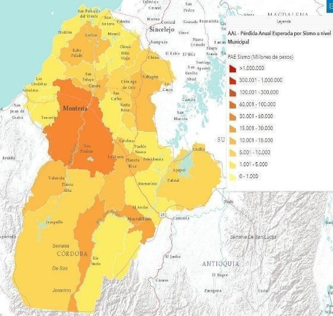
FIGURA 26 Pérdida Anual Esperada por Sismo a nivel Municipal. Fuente: Portal Geográfico del Conocimiento del riesgo de desastres (2025).
Link: https://ungrd.maps.arcgis.com/apps/dashboards/dcd959995f3a480aa2b9bf50bc56e78d
El mapa de la Figura 22 muestra la Pérdida Anual Esperada (PAE) por sismo a nivel municipal en Córdoba, utilizando una escala de colores donde el rojo oscuro indica mayores pérdidas económicas. Municipios como Montería y el centro-norte de Córdoba presentan las afectaciones más altas, con valores que superan los 300.000 millones de pesos, lo que sugiere una mayor concentración de infraestructura y población vulnerable.
En contraste, los municipios del sur de Córdoba y algunas zonas costeras tienen menores pérdidas esperadas, oscilando entre 1.000 y 10.000 millones de pesos, posiblemente debido a su menor densidad poblacional y condiciones geológicas más favorables.
5.2.4.2. Escenario de amenaza por Tsunami.
Los municipios que presentan escenario de amenaza son: Los Córdobas, Puerto Escondido, Moñitos, San Bernardo del Viento y San Antero.
En términos generales, las costas de Colombia en el Pacífico y en el Caribe se encuentran expuestas a la ocurrencia de un tsunami, sin embargo, las características de cada costa causan que los impactos del fenómeno sean diferentes en cada una de ellas. En el Pacífico históricamente se han registrado tsunamis causados por sismos con fuente en la zona de subducción en los límites Colombia – Ecuador. En la región Caribe, por el contrario, además de la fuente sísmica, existe el potencial de ocurrencia de tsunami causado por deslizamiento submarino.
El “Atlas de Riesgo de Colombia: revelando los desastres latentes” presenta mapas de amenaza por Tsunami para el caribe colombiano, asociado a un periodo de retorno de 475 años.

FIGURA. 27 Mapa amenaza por tsunami – Atlántico. Fuente: Atlas de riesgo de Colombia, UNGRD (2021), pg. 38.
Link: https://drive.google.com/file/d/1XS7wURqTKYck8hL5dIyVPWD0SqVn4fOE/view?usp=drive_link
El Visor Atlas del riesgo de Colombia presenta mapas con pérdida anual esperada por Tsunami y pérdida anual esperada relativa por Tsunami a nivel departamental y municipal.

FIGURA. 28 Mapa de pérdida Anual Esperada por Tsunami a nivel Municipal. Fuente: Diagnostico de información del riesgo de desastres departamento de Córdoba, UNGRD (2021), pg. 9.
Link: https://ungrd.maps.arcgis.com/apps/dashboards/dcd959995f3a480aa2b9bf50bc56e78d
Las tonalidades más oscuras indican mayores pérdidas económicas, con valores que superan los 2.500 millones de pesos en zonas costeras del norte. Esto sugiere una mayor exposición al riesgo de tsunamis en estos municipios, probablemente debido a su cercanía al mar y su dependencia de actividades económicas costeras. En contraste, los municipios del interior, como Montería y el sur de Córdoba, presentan pérdidas esperadas significativamente menores, inferiores a 2,5 millones de pesos, debido a su menor exposición a este fenómeno.
5.2.4.3. Escenario de amenaza por Erosión fluvial.
La erosión fluvial en el departamento de Córdoba es un fenómeno que afecta gravemente la estabilidad de los bordes de los ríos, causando el desprendimiento de partículas del suelo y la degradación de las áreas ribereñas (CVS, 2021).
Este proceso se ve intensificado por la falta de cobertura vegetal, la extracción de materiales de arrastre y las intervenciones humanas no reguladas, como la disposición inadecuada de residuos y la captación de agua sin permisos (CVS, 2021). La vegetación ribereña, además de contribuir a la estabilidad de los bancos, influye en la reducción de la erosión al mejorar las propiedades del suelo y disminuir la turbulencia del agua (Mamo & Bubenzer, 2001a, 2001b; Wynn & Mostaghimi, 2006).
En la cuenca del río Sinú, los municipios más afectados por la erosión fluvial son Montería, Tierralta y Santa Cruz de Lorica, aunque también se presentan daños significativos en San Bernardo del Viento, Valencia, Cereté y San Pelayo, especialmente en temporadas de lluvias y eventos climáticos extremos como La Niña (CVS, 2021).
Entre los factores que agravan la situación están la regulación hidráulica de la represa URRÁ S.A., el uso del dique de cierre como vía y la presencia de cultivos con raíces que debilitan los taludes, como plátano, yuca y algodón (CVS, 2021). Se han identificado 206 puntos críticos de erosión, de los cuales el 8,74 % presenta riesgo alto, lo que evidencia la urgencia de medidas de mitigación (CVS, 2021).

FIGURA 29 Puntos críticos en la cuenca del río Sinú. Fuente: Plan Departamental de Gestión del Riesgo de Desastres, Gobernación de Córdoba y CVS (2021), versión pdf, pg. 212.
Link: https://drive.google.com/file/d/1oj27ff9ZG4AUTwDZrFSv1SLVEEILtSWK/view?usp=drive_link
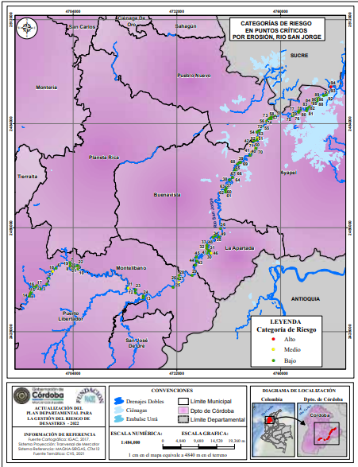
FIGURA. 30 Puntos Críticos en la cuenca del río San Jorge. Fuente: Plan Departamental de Gestión del Riesgo de Desastres, Gobernación de Córdoba y CVS (2021), versión pdf, pg. 216.
Link: https://drive.google.com/file/d/1oj27ff9ZG4AUTwDZrFSv1SLVEEILtSWK/view?usp=drive_link
Este mapa muestra los puntos críticos por erosión en la cuenca del río San Jorge, en el departamento de Córdoba. A lo largo del río se identifican zonas con riesgo alto (rojo), medio (amarillo) y bajo (verde), especialmente en municipios como La Apartada, Montelíbano, Ayapel y Puerto Libertador. La mayoría de los puntos están clasificados con riesgo medio, lo que indica vulnerabilidad ante pérdida de suelo y afectaciones a comunidades cercanas. Esta información es clave para priorizar obras de contención y manejo del cauce. El seguimiento técnico permite prevenir desastres por erosión fluvial.
Por su parte, en la cuenca del río San Jorge, la erosión fluvial también representa un riesgo significativo, agravado por intervenciones antrópicas en distintos sectores (CVS, 2021). En 2021, la problemática alcanzó niveles alarmantes cuando 28 de los 30 municipios de Córdoba fueron declarados en calamidad pública por inundaciones, afectando a 45.000 personas en localidades como Puerto Libertador, San José de Uré y Ayapel (CVS, 2021). Las inspecciones técnicas identificaron 94 puntos críticos, con un solo punto en riesgo alto, concentrado en los municipios de Ayapel, Montelíbano y Buenavista (CVS, 2021).
La erosión fluvial no solo amenaza la estabilidad del territorio, sino que también compromete la seguridad de las comunidades ribereñas, lo que hace indispensable la implementación de medidas integrales de gestión del riesgo.
5.2.4.4. Escenario de amenaza por Erosión costera
La erosión costera en el departamento de Córdoba es un proceso que afecta gravemente su territorio, debido a la combinación de factores naturales y antropogénicos. Según el Plan Maestro de Erosión Costera de Colombia (MinAmbiente, 2017), la costa del país está conformada por diversos ecosistemas como acantilados, playas y manglares, los cuales han sido impactados por la disminución en el aporte de sedimentos de los ríos, la explotación de recursos marino-costeros y la construcción descoordinada de infraestructuras. Esta problemática se ha agravado con el aumento del nivel del mar, atribuido al cambio climático y a movimientos tectónicos (INVEMAR, 2018).
El departamento de Córdoba cuenta con una línea de costa de 172,67 km, donde predominan los acantilados (67 %) y las playas y manglares (33 %). En esta zona, los municipios de San Antero, San Bernardo del Viento, Moñitos, Puerto Escondido y Los Córdobas han sido identificados con distintos niveles de vulnerabilidad.
Estudios indican que el 74 % de la costa presenta alta y muy alta vulnerabilidad a la erosión, siendo los sectores más afectados aquellos con acantilados bajos sin playas, que sufren un proceso de socavación en épocas secas y deslizamientos en temporadas de lluvias (INVEMAR, 2018).
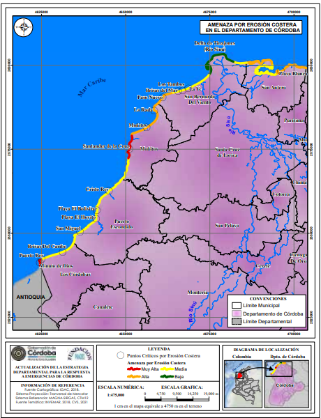
FIGURA. 31 Mapa de puntos críticos por Erosión Costera en el Departamento de Córdoba. Fuente: : Plan Departamental de Gestión del Riesgo de Desastres, Gobernación de Córdoba y CVS (2021), versión pdf, pg. 225.
Link: https://drive.google.com/file/d/1oj27ff9ZG4AUTwDZrFSv1SLVEEILtSWK/view?usp=drive_link
Este mapa muestra los puntos críticos por erosión costera en el departamento de Córdoba, especialmente a lo largo del litoral Caribe. Las zonas más afectadas, marcadas en rojo, se encuentran cerca de Los Córdobas, Moñitos, San Bernardo del Viento y Puerto Escondido. En amarillo se identifican áreas con amenaza media, y en naranja amenaza alta. Estos sectores costeros están perdiendo terreno debido a la acción del mar, lo cual pone en riesgo viviendas, vías y ecosistemas. Es fundamental implementar medidas de protección para mitigar el impacto de la erosión.
Los principales puntos críticos incluyen localidades como Santander de la Cruz, Puerto Rey y Minuto de Dios, clasificadas con amenaza muy alta. Otros sectores como La Rada, Paso Nuevo y Brisas del Mar presentan una amenaza alta, mientras que zonas como Brisas del Caribe, San Miguel y Cristo Rey están catalogadas con amenaza media. La falta de resiliencia y la fragilidad socioeconómica de las comunidades en Moñitos, Puerto Escondido y Los Córdobas incrementan su riesgo ante este fenómeno, siendo Puerto Escondido el municipio con menor exposición debido a la baja presencia de vegetación (INVEMAR, 2018).
La continua pérdida de terreno evidencia la necesidad de implementar medidas de mitigación efectivas que integren la protección ambiental y el desarrollo sostenible, pues sin acciones concretas, esta problemática seguirá intensificando en el futuro (Min Ambiente, 2017).
5.2.4.5. Escenario de amenaza por Volcanismo de lodo.
El volcanismo de lodo en el departamento de Córdoba es un fenómeno geológico derivado de la movilización de material arcilloso y gases a alta presión a través de fracturas, lo que genera geoformas como domos y colinas. Este proceso está influenciado por la interacción tectónica de las placas Nazca, Caribe y Suraméricana y puede activarse por factores como la compresión tectónica, el alto contenido de gases y la diferencia de densidad entre los materiales confinados (Carvajal, 2010; Carvajal, 2017).
En Córdoba, las estructuras volcánicas contienen areniscas, arcillolitas y limolitas, con un alto grado de fracturamiento debido a la expansión de los gases al alcanzar la superficie. Además, la acumulación de gases inflamables como el metano bajo estructuras selladas de arcilla puede generar erupciones violentas e incendios (Carvajal, 1992; Carvajal, 2001; Carvajal & Mendivelso, 2010).
Diversos municipios del departamento presentan actividad de volcanismo de lodo con distintos niveles de amenaza. En Puerto Escondido, existe un sistema de volcanes interconectados, donde el volcán principal, aunque activo, no representa un peligro inminente para la población, aunque los conos secundarios han invadido parte de la vía municipal. En Moñitos, dentro del Cinturón del Sinú, se han identificado fracturas y zonas de debilidad geológica, con algunas estructuras volcánicas destinadas a uso turístico. Por su parte, en Canalete, el complejo volcánico San Diego, conformado por ocho volcanes, presenta una alineación estructural y su actividad está vinculada a la tectónica local, lo que podría generar impactos en la población PMGR, (2023).
En conclusión, el análisis de la información define con un alto potencial de ocurrencia del fenómeno natural a los siguientes municipios: Valencia, Canalete, Moñito, Los Córdobas, Puerto Escondido, San Bernardo del Viento, San Antero.

FIGURA. 32 Mapa de municipios con presencia de volcanismo de lodo. Fuente: Plan Departamental de Gestión del Riesgo de Desastres, Gobernación de Córdoba y CVS (2021), versión pdf, pg. 276.
Link: https://drive.google.com/file/d/1oj27ff9ZG4AUTwDZrFSv1SLVEEILtSWK/view?usp=drive_link
Este mapa muestra los municipios del departamento de Córdoba donde hay presencia de vulcanismo de lodo, señalados en color amarillo. Los más destacados son Canalete, Los Córdobas, Puerto Escondido, Moñitos, San Bernardo del Viento, San Antero y Valencia. Estos fenómenos naturales están concentrados principalmente en la zona norte y noroeste, cerca de la costa Caribe. El resto del territorio, marcado en púrpura, no presenta evidencia registrada de este fenómeno. Conocer estas zonas es clave para la gestión del riesgo y el monitoreo geológico del departamento.
En la Subregión Costanera, los municipios son altamente susceptibles a la erosión causada por el volcanismo de lodo, afectando la estabilidad del terreno y la infraestructura local PMGR, (2023). En el municipio de Valencia, en la subregión del Alto Sinú, también se registra actividad de diapirismo de lodo en una zona de suelos de origen volcánico, caracterizados por su resistencia a bajas concentraciones de fósforo y su capacidad de tolerar periodos cortos de inundación. Este escenario resalta la necesidad de monitoreo y gestión del riesgo, dado que la actividad volcánica de lodo en Córdoba puede impactar tanto los ecosistemas como las comunidades aledañas.
5.2.5. Amenazas antrópicas no intencionales.
El riesgo tecnológico2 en el departamento de Córdoba se relaciona con diversos factores, desde la accidentalidad vial hasta la expansión del sector minero-energético. A pesar de las campañas de prevención, los accidentes de tránsito siguen siendo recurrentes, especialmente en corredores como Sahagún – Chinú y Montería – Los Córdobas, donde la imprudencia y el aumento de tráfico en temporadas especiales agravan la situación (Ordenanza 0009, 2020). Paralelamente, el crecimiento del sector minero-energético ha consolidado a Córdoba como un territorio clave para la explotación de níquel, oro, carbón y gas natural, generando oportunidades económicas, pero también desafíos en la gestión ambiental y en la regulación de la minería ilegal (Ordenanza 0009, 2020).
En este contexto, Córdoba también enfrenta riesgos asociados a la industria termoeléctrica y de hidrocarburos, con infraestructura clave como la termoeléctrica Gecelca y la terminal de OCENSA en San Antero. Estos proyectos demandan una planificación integral que minimice impactos ambientales y sociales, garantizando el equilibrio entre desarrollo económico y sostenibilidad (Ordenanza 0009, 2020).

FIGURA. 33 Mapa de calor para riesgos Natech, accidentes tecnológicos reportados en el departamento de Córdoba entre 2011 y 2024. Fuente: UNGRD (2025)
Link: https://lookerstudio.google.com/u/0/reporting/a7a6878c-41ed-48ae-9f01-7f3882928f2a/page/Y9M8E
Este mapa de calor muestra las zonas del departamento de Córdoba con mayor riesgo Natech (desastres naturales que afectan instalaciones tecnológicas o industriales). Las áreas más críticas están en Montería y alrededores, donde el color rojo indica alta concentración de riesgo. También se observan puntos de riesgo en Montelíbano, Planeta Rica, Lorica y la zona costera. El color amarillo representa niveles de riesgo medio, presentes en varias zonas del centro y sur del departamento. Este análisis permite priorizar acciones de prevención en sectores industriales y urbanos vulnerables.
Dentro de este panorama, las hidroeléctricas representan un factor clave en la gestión del riesgo tecnológico. La Hidroeléctrica Urrá ubicada sobre el río Sinú, opera bajo licencia ambiental y es supervisada por la Autoridad Nacional de Licencias Ambientales (ANLA) para mitigar impactos como la erosión fluvial (CVS, 2021). En la Figura 29 se muestra la distribución y el tipo de industria manufacturera en el departamento clasificada por color, según información proporcionada por el DANE.
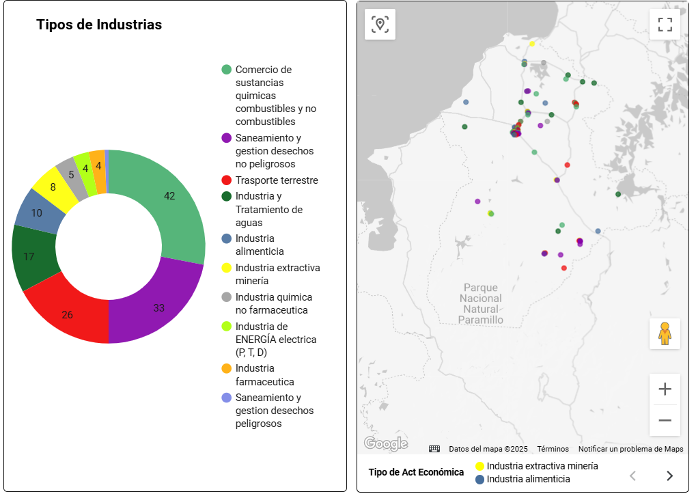
FIGURA. 34 Tipo de industrias y su ubicación en el departamento de Córdoba. Adaptado de: DANE, 2025.
Link: https://lookerstudio.google.com/u/0/reporting/a7a6878c-41ed-48ae-9f01-7f3882928f2a/page/Y9M8E
Este gráfico muestra los tipos de industrias presentes en Córdoba y su ubicación geográfica. La actividad más común es el comercio de sustancias químicas, combustibles y no combustibles (42 casos), seguida por saneamiento de desechos no peligrosos (33) y transporte terrestre (26). En el mapa se observa que estas industrias están concentradas al norte y centro del departamento, con algunas en el área del Parque Nacional Paramillo. Actividades como minería e industria alimenticia tienen menos presencia, pero también están distribuidas en varios puntos. Esta información es clave para analizar posibles riesgos Natech en zonas industriales.
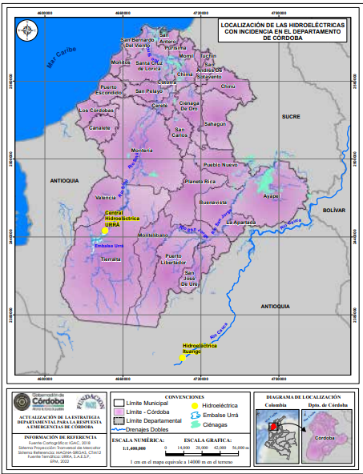
FIGURA. 35 Ubicación de las Hidroeléctricas Urrá e Ituango. Fuente: Plan Departamental de Gestión del Riesgo de Desastres, Gobernación de Córdoba y CVS (2021), versión pdf, pg. 294.
Link: https://drive.google.com/file/d/1oj27ff9ZG4AUTwDZrFSv1SLVEEILtSWK/view?usp=drive_link
Además de los riesgos tecnológicos, el sector industrial también está sujeto a eventos Natech –amenazas naturales que desencadenan accidentes tecnológicos o industriales. Estos escenarios pueden generar graves consecuencias a pesar de ser eventos de baja probabilidad, lo que hace que los efectos de estos accidentes sean más graves para las personas, el entorno y la infraestructura, en comparación con los provocados por un accidente tecnológico (UNGRD, 2023). Por lo anterior, este tipo de riesgos ha cobrado relevancia en el país, impulsando estrategias de gestión del riesgo conforme a la Ley 1523 de 2012 y el Decreto 2157 de 2017 (UNGRD, 2018), el Programa de Prevención de Accidentes Mayores-PPAM (Decreto 1347 de 2021) y la Resolución 0559 de 2021 que establece los valores de riesgo máximo individual accidental para instalaciones fijas. En este contexto, Córdoba también enfrenta riesgos asociados a la industria termoeléctrica y de hidrocarburos, con infraestructura clave como la termoeléctrica Gecelca y la terminal de OCENSA en San Antero. Estos proyectos demandan una planificación integral que minimice impactos ambientales y sociales, garantizando el equilibrio entre desarrollo económico y sostenibilidad (Ordenanza 0009, 2020).
5.2.5.1. Escenario de amenaza por Incendios
En Colombia, la mayoría de los incendios forestales tienen un origen antrópico, ya sea de manera intencional para la expansión de la frontera agropecuaria o por negligencia en el uso del fuego en actividades como las quemas agrícolas. Según el IDEAM (2010), el país cuenta con 61.246.659 hectáreas de bosques, de las cuales cada año se ven afectadas aproximadamente 42.000 hectáreas por incendios forestales (MAVDT, 2010). Estos eventos tienen un impacto ambiental significativo, agravado por fenómenos climáticos como El Niño, que ha estado presente en años críticos como 1972, 1991-1992 y 2009-2010 (MAVDT, 2010).
Los incendios forestales generan afectaciones severas en la biodiversidad, con la pérdida de flora y fauna, la degradación del suelo y la contaminación de cuerpos de agua. Se ha evidenciado que, incluso después de 6 a 10 años, las poblaciones de fauna en zonas afectadas no logran recuperarse completamente (CVS, 2017). Además, los incendios contribuyen al cambio climático mediante la emisión de CO₂ y el aumento de la temperatura atmosférica, intensificando el calentamiento global (CVS, 2018). Las cenizas y el material particulado también generan un impacto en la calidad del agua, afectando su disponibilidad y comprometiendo el equilibrio de los ecosistemas acuáticos (CVS, 2018).
En el departamento de Córdoba, la ocurrencia de incendios forestales está estrechamente relacionada con la actividad humana, particularmente con la preparación de tierras para cultivos mediante la quema de vegetación, lo que ha alterado la cobertura vegetal en las cuencas hidrográficas y generado daños en el suelo (CVS, 2019). Las zonas con mayor riesgo de incendios incluyen el Alto Sinú, especialmente en el municipio de Valencia; la subregión del San Jorge, con incidencia en La Apartada, Buenavista y Ayapel; la subregión Costanera, destacándose Moñitos; y el Bajo Sinú, donde Cotorra presenta la mayor amenaza (CVS, 2019).

FIGURA. 36 Mapa de amenaza por incendios forestales. Fuente: Plan Departamental de Gestión del Riesgo de Desastres, Gobernación de Córdoba y CVS (2021), versión pdf, pg. 234.
Link: https://drive.google.com/file/d/1oj27ff9ZG4AUTwDZrFSv1SLVEEILtSWK/view?usp=drive_link
Este mapa muestra las zonas del departamento de Córdoba con mayor riesgo de incendios forestales. Las áreas en rojo presentan una amenaza muy alta, especialmente en municipios como Los Córdobas, Montería, Montelíbano y Ayapel. Las zonas en amarillo y naranja tienen un riesgo moderado a alto, mientras que las verdes indican baja o muy baja amenaza. El sur del departamento, cerca de Puerto Libertador y Tierralta, presenta menor riesgo. Esta información es clave para prevenir emergencias y proteger los ecosistemas vulnerables.
Entre 2016 y 2021, se han registrado puntos calientes en Córdoba, concentrándose en las subregiones del Alto Sinú, San Jorge y Sabanas, mientras que las zonas con menor incidencia se ubican en el Medio y Bajo Sinú y en la Costanera (CVS, 2019).
Es importante destacar que en áreas como el Parque Nacional Natural Paramillo no existen estudios de riesgo específicos, aunque sí se han identificado focos de incendios en los últimos años (CVS, 2019). Estas tendencias subrayan la necesidad de fortalecer estrategias de prevención y manejo del fuego para reducir la vulnerabilidad del territorio frente a los incendios forestales.
## 5.3. Mapas Comunitarios y Mecanismos de Participación Ciudadana para la Gestión del Riesgo en el Departamento de Córdoba
El proyecto “Mapas Comunitarios y Mecanismos de Participación”, liderado por la Subdirección para el Conocimiento del Riesgo de la UNGRD, busca fortalecer los procesos sociales de participación ciudadana, la gestión del conocimiento y los saberes locales en el marco del Sistema Nacional de Gestión del Riesgo de Desastres (SNGRD). Su propósito es empoderar a las comunidades como actores activos en la identificación de riesgos y en la planificación territorial, integrando sus percepciones, memorias y capacidades en los instrumentos municipales de gestión del riesgo (PMGRD).
El proyecto surge como respuesta a la debilidad institucional y técnica que aún persiste en muchos territorios, donde los procesos de participación en GRD no están plenamente consolidados o no cuentan con herramientas que promuevan la apropiación social del conocimiento del riesgo.
En cumplimiento de la Ley 1523 de 2012 y de la Circular 030 de 2022, la iniciativa promueve la participación ciudadana como un derecho fundamental y una responsabilidad compartida, impulsando la elaboración de mapas comunitarios bajo metodologías de cartografía participativa y colaborativa, donde confluyen los saberes técnicos y sociales para generar una visión territorial integral.
Estos procesos fortalecen la gobernanza del riesgo, al permitir que comunidades rurales, étnicas, campesinas y urbanas participen directamente en la identificación de amenazas, vulnerabilidades y capacidades locales, aportando información valiosa para la actualización de los PMGRD y la incorporación de la gestión del riesgo en los esquemas de ordenamiento territorial (EOT y POT).
Asimismo, la participación en la construcción de mapas comunitarios favorece el diálogo entre autoridades locales, coordinadores municipales de GRD, organizaciones sociales y académicas, facilitando la integración del conocimiento técnico con el conocimiento local. Esto se traduce en mejores decisiones sobre uso del suelo, mitigación de impactos climáticos y fortalecimiento de la resiliencia comunitaria.
Para conocer más sobre el proceso, herramientas metodológicas, visor de resultados y experiencias de los municipios, se invita a consultar el portal oficial de la UNGRD: https://sites.google.com/gestiondelriesgo.gov.co/mapascomunitarios/
# 6. REFERENCIAS
Acuerdo 11 de 2008, de la Agencia Nacional de Hidrocarburos (ANH). [[https://www.suin-juriscol.gov.co/clp/contenidos.dll/Acuerdo/4000080?fn=document-frame.htm$f=templates\(3.0]{.underline}](https://www.suin-juriscol.gov.co/clp/contenidos.dll/Acuerdo/4000080?fn=document-frame.htm\)f=templates$3.0)
Acuerdo 04 de 2017, de la Agencia Nacional de Hidrocarburos (ANH). https://www.anh.gov.co/documents/4041/Acuerdo-4-de-2017-Define-algunas-Areas-disponibles.pdf
FAO (2022). Análisis Departamental de Vulnerabilidad y Riesgo frente al Cambio Climático para el sector Agropecuario. Pág. 31.
Unidad de Planificación Rural Agropecuaria (UPRA). (2024, 22 de agosto). Documento regional. Córdoba. Ministerio de Agricultura y Desarrollo Rural. https://upra.gov.co/Kit_Territorial/2-%20Informaci%C3%B3n%20por%20Departamentos/C%C3%93RDOBA/2-%20Documento%20Regional%20UPRA%20C%C3%B3rdoba.pdf
GOBERNACION DE CORDOBA. (2022). Plan Departamental para la Gestión del Riesgo de Desastres 2022-2031. Córdoba. Colombia. Pag 384.
GOBERNACION DE CORDOBA (2024). Plan de Desarrollo Departamental “Córdoba Lo Tiene Todo Para Estar A Otro Nivel”. Córdoba. Colombia. Pág. 552.
CVS. (2019). Protocolo local de estadísticas, análisis y medidas de manejo de incendios forestales en ecosistemas estratégicos del departamento de Córdoba. Corporación Autónoma Regional de los Valles del Sinú y del San Jorge – CVS.
CVS. (2020). Plan de Gestión Ambiental Regional 2020-2031. Córdoba. Colombia. Pág. 204.
CVS. (2022). Plan Integral de Gestión del Cambio Climático Territorial, departamento de Córdoba. Corporación Autónoma Regional de los Valles del Sinú y del San Jorge – CVS.
ICANH (2025). Instituto Colombiano de Antropología e Historia. Geo visor De Hallazgos Y Áreas Arqueológicas Protegidas En Colombia. En https://geoparques.icanh.gov.co/#/
IDEAM. (2018). La variabilidad climática y el cambio climático en Colombia. Instituto de Hidrología, Meteorología, y Estudios Ambientales – IDEAM.
INVEMAR. (2016). Formulación del Plan de Manejo Integrado de la Unidad Ambiental Costera Estuarina Río Sinú - Golfo de Morrosquillo, Caribe colombiano. Santa Marta. Colombia.
PNN (2025). Nuestros Parque, Región Caribe. Colombia. En https://www.parquesnacionales.gov.co/nuestros-parques/#caribe
República de Colombia. (2012). Ley 1523. Bogotá: Presidencia de la República.
UNGRD. (2018). Atlas de Riesgo de Colombia: Revelando los desastres latentes. Bogotá D.C., Colombia: Unidad Nacional para la Gestión del Riesgo de Desastres; Ingeniar Risk Intelligence.
Viloria de la Hoz, J. (2004, noviembre). Documento de trabajo sobre economía regional No. 51. Banco de la República de Colombia. https://www.banrep.gov.co/sites/default/files/publicaciones/archivos/DTSER-51.pdf
- Para más información sobre el geoportal del Servicio Geológico Colombiano (SGC), buscar en el siguiente link: https://srvags.sgc.gov.co/jsViewer/Mapa_Geologico_colombiano_2023/
- Para más información sobre la cartografia geológica del departamento de Cordoba en la plancha 62 – La Ye, buscar en el siguiente link: https://miig.sgc.gov.co/Paginas/Resultados.aspx?k=Cartograf%C3%ADa+geol%C3%B3gica+de+la+plancha+62+La+Ye,+departamentos+de+C%C3%B3rdoba+y+Sucre
- Link del Geovisor de los Parques nacionales naturales de Colombia. https://mapas.parquesnacionales.gov.co/
- Link del Geovisor de áreas arqueológicas protegidas por la autoridad ICANH.
# 7. GLOSARIO
Amenaza: Fenómeno físico, natural, socio-natural o antrópico que puede ocasionar daños a la población, la infraestructura o el ambiente, dependiendo de la vulnerabilidad existente en el territorio.
Cuenca hidrográfica: Unidad territorial delimitada por el conjunto de aguas que drenan hacia un mismo río, lago o mar, considerada base para la planificación hídrica y ambiental.
Ecosistemas estratégicos: Áreas naturales con funciones ecológicas esenciales, tales como la regulación hídrica, conservación de biodiversidad o protección contra fenómenos climáticos.
Geología económica: Rama de la geología enfocada en el estudio de los recursos minerales y energéticos presentes en el territorio y su potencial de aprovechamiento.
Geomorfología: Ciencia que estudia las formas del relieve terrestre, su origen y dinámica, así como los procesos naturales y antrópicos que las modifican.
Gestión del Riesgo de Desastres (GRD): Proceso social que formula, ejecuta y evalúa políticas, planes y acciones para la reducción del riesgo, el manejo de desastres y la recuperación sostenible.
Inundación: Evento hidrometeorológico caracterizado por el desbordamiento temporal de ríos, quebradas o cuerpos de agua que afecta a las poblaciones y al entorno.
Movimientos en masa: Procesos de inestabilidad de laderas como deslizamientos, flujos o caídas de rocas y suelos, provocados por factores naturales o antrópicos.
Ordenamiento Territorial (POT): Herramienta de planificación que regula el uso, ocupación y transformación del suelo en municipios y distritos, buscando el equilibrio entre desarrollo y sostenibilidad.
Patrimonio arqueológico: Conjunto de bienes materiales e inmateriales de origen prehispánico o histórico, con valor científico y cultural, protegidos por la normatividad nacional.
POMCA (Plan de Ordenación y Manejo de Cuencas Hidrográficas): Instrumento de planificación ambiental que orienta el uso, manejo y conservación de las cuencas hidrográficas con criterios de sostenibilidad.
Riesgo Natech: El riesgo Natech es aquel que surge cuando un evento de origen natural desencadena un accidente tecnológico, generando consecuencias potencialmente graves sobre la población, el ambiente y la infraestructura crítica (Krausmann et al., 2017; Showalter & Myers, 1994).
Resiliencia: Capacidad de los sistemas sociales, económicos y ambientales para resistir, adaptarse y recuperarse eficazmente frente a los efectos de amenazas o desastres.
Sequía: Período prolongado de déficit en la disponibilidad de agua respecto a los niveles normales, que impacta ecosistemas, agricultura, infraestructura y calidad de vida.
Variabilidad climática: Fluctuaciones naturales de las condiciones atmosféricas a corto y mediano plazo, asociadas a fenómenos como El Niño y La Niña, que inciden en la disponibilidad hídrica y el riesgo climático.
Vulnerabilidad: Condiciones físicas, sociales, económicas y ambientales que incrementan la susceptibilidad de una comunidad o ecosistema frente al impacto de una amenaza.
LISTADO DE FIGURAS
FIGURA. 1 Mapa Político Administrativo del Departamento de Córdoba. Fuente: IGAC (2002). 8
FIGURA. 7 Mapa de las redes de gasoductos en la costa caribe. FUENTE: Promigas (2025) 19
FIGURA. 8 Regiones climáticas en el Departamento de Córdoba, pagina 7. Fuente: FAO-IDEAM (2022). 20
FIGURA 16 Visor web del ICANH. Fuente: https://geoparques.icanh.gov.co/#/ 32
FIGURA 17 Áreas protegidas en el Departamento de Córdoba. Fuente: RUNAP – PNN 2025 33
FIGURA 18 Mapa hidrográfico del departamento de Córdoba. FUENTE: Sociedad Geográfica de Colombia 35
LISTADO DE TABLAS
Tabla 1 Municipios del departamento de Córdoba. Fuente: Autor (2025). 10
Tabla 2 Instrumentos de ordenamiento territorial municipal. 13
Tabla 3 Instrumentos POMCA en el departamento. Fuente: CVS (2024) 14
Tabla 4 Instrumento de Adaptación al Cambio Climático. Fuente: Autor (2025). 14
Tabla 5 Instrumentos departamentales de planificación en Gestión del Riesgo de Desastres. 15
Tabla 6. Tipos de uso de suelo en el Departamento de Córdoba. Fuente: CVS (2023) 18
Tabla 7 Parques Nacionales Naturales en el departamento. FUENTE: PNN (2025). 32
Tabla 8 Hallazgos arqueológicos en el departamento. Fuente: ICANH (2025). 33
Tabla 9 Ecosistemas estratégicos registrados en el RUNAP. Fuente: Autores adaptado del RUNAP. 34
Tabla 10 Tipos de ecosistemas en el Departamento de Córdoba. Fuente: CVS (2022). 35
Tabla 11 Fuentes hídricas en jurisdicción del departamento de Córdoba. Fuente: Autor (2024). 36
Tabla 12 Eventos priorizados en el Departamento de Córdoba. Fuente: PDGRD (2023). 39
Tabla 14 Municipios con amenaza sísmica intermedia en el departamento. Fuente: UNGRD (2021). 46
Tabla 15 Evidencias del programa en el municipio de Ayapel. FUENTE: UNGRD (2024). 59
Tabla 18 Evidencias de la experiencia participativa en el municipio. FUENTE: UNGRD (2025). 62
Tabla 20 Mapa de actores estratégicos en el municipio de La Apartada. FUENTE: UNGRD (2025). 64
SIGLAS
ANH: Agencia Nacional de Hidrocarburos.
ANM: Agencia Nacional de Minería.
CAR: Corporación Autónoma Regional.
CVS: Corporación Autónoma Regional de los Valles del Sinú y del San Jorge.
DANE: Departamento Administrativo Nacional de Estadística.
DNP: Departamento Nacional de Planeación.
FAO: Organización de las Naciones Unidas para la Alimentación y la Agricultura.
FEDEGAN: Federación Colombiana de Ganaderos.
ICANH: Instituto Colombiano de Antropología e Historia.
IDEAM: Instituto de Hidrología, Meteorología y Estudios Ambientales.
IGAC: Instituto Geográfico Agustín Codazzi.
INVEMAR: Instituto de Investigaciones Marinas y Costeras.
PNN: Parques Nacionales Naturales.
POMCA: Plan de Ordenación y Manejo de Cuencas Hidrográficas.
POT: Plan de Ordenamiento Territorial.
SGC: Servicio Geológico Colombiano.
SNGRD: Sistema Nacional de Gestión del Riesgo de Desastres.
UNGRD: Unidad Nacional para la Gestión del Riesgo de Desastres.
UNHCR: United Nations High Commissioner for Refugees.
UPRA: Unidad de Planificación Rural Agropecuaria
NSR-10: Norma Sismo Resistente del 2010.
SISCH: Sistema de Información de Sismicidad Histórica de Colombia.
PAE: Pérdida Anual Esperada.
PDGRD: Plan Departamental Gestión del Riesgo de Desastres.
1. INTRODUCCIÓN
Footnotes
Geovisor de áreas arqueológicas protegidas: https://geoparques.icanh.gov.co/#/ ↩︎
Riesgo tecnológico: Daños o pérdidas potenciales que pueden presentarse debido a los eventos generados por el uso y acceso a la tecnología, originados en sucesos antrópicos, naturales, socio-naturales y propios de la operación (UNGRD, Resolución 1770 de 2013).↩︎